Guide d'utilisation
et support de formation
Tout ce que fait SAGI SCHOOL, module par module : à quoi sert chaque écran, comment s'en servir, et ce qu'il ne faut pas rater. Le guide est suivi d'un manuel destiné aux formateurs HADY GESMAN.
Ce qui a changé depuis la version 1.36
Cette édition remplace celle d'août 2026. Les formateurs qui connaissent l'ancienne version peuvent commencer par ce tableau : il renvoie aux passages du guide qui décrivent chaque nouveauté. Ces passages portent la pastille Nouveau.
| Domaine | Ce qui est nouveau | Où le lire |
|---|---|---|
| Élèves | Familles et fratries : regroupement automatique par numéro de téléphone, réduction fratrie, encaissement groupé avec paiement d'avance, situation financière de la famille en PDF, un seul rappel par famille. Encaissement des bourses d'un organisme et relevé PDF. Listes PDF par classe. Fiche élève enrichie (professions, résidences, attitudes à signaler, champs propres à l'école). Sortie et réintégration d'un élève. | Élèves, Familles |
| Crèche et garderie | Facturation à la journée à partir de l'appel du jour. Garde du soir facturée par tranche. Formules horaires par section. Caisse séparée pour chaque service. | Garderie, Paramètres |
| Paiements | Cahier mensuel du guichet, factures proforma, paiements d'avance, choix de la caisse, frais d'adhésion des services, reçu au format ticket 80 mm. | Paiements |
| Comptabilité | Les services extra (cantine, garderie, garde du soir) sont comptés en produits accessoires (758). Le 706 reste réservé au service éducatif. | Comptabilité |
| RH | Retenue pour absences et retards, expliquée sur le bulletin. Départ d'un salarié. Recherche dans le personnel. Un bulletin annulé libère son mois. | RH |
| Académique | Barème libre (/5, /10, /20, /30…), moyenne « total des points », arrondi ou troncature, établissements bilingues français-arabe, suivi pédagogique, évaluations modifiables, bulletins de classe imprimés deux par feuille, IA et IEF en tête des bulletins. | Académique |
| Pilotage | Tableau de bord en temps réel avec la carte « Pilotage du mois ». Couleurs d'alerte unifiées (rouge, orange, jaune). | Aperçu, Suivi mensuel |
| Installation | Mode réseau pour plusieurs postes d'une même école. Application cloud installable sur le bureau. Compte à rebours de la licence dans la barre du haut. | Premier démarrage |
Le système en un coup d'œil
SAGI SCHOOL gère l'établissement de bout en bout : l'élève, ce qu'il doit, ce qu'il verse, la comptabilité qui en découle, le personnel, les notes, et les ressources que l'école mobilise à côté de la scolarité.
Tout le reste repose sur un principe : on ne saisit jamais deux fois la même chose. Un règlement encaissé au guichet produit à lui seul le reçu de la famille, la ligne du suivi mensuel, l'écriture au journal, le mouvement de trésorerie et la mise à jour de l'alerte de l'élève. Une école qui tient un cahier à côté du logiciel fait le travail deux fois et finit avec deux chiffres différents.
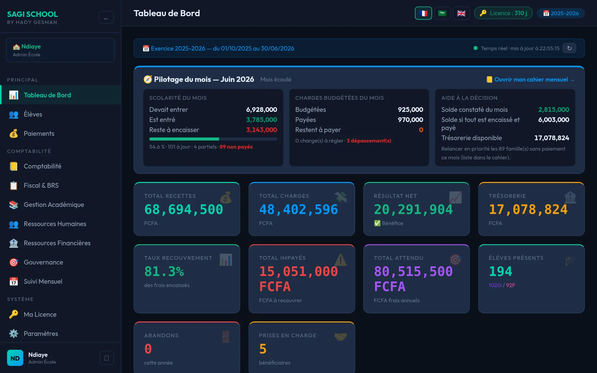
Nouveau Plus bas, Tous les modules en un coup d'œil présente une carte par module ouvert : familles et boursiers, garderie, personnel et paie, fiscal, résultats scolaires, ressources financières, projets. Chaque carte reprend les chiffres de l'écran du module lui-même et y mène d'un clic. Ce qui demande une action s'affiche en orange, par exemple des bulletins de paie à produire ou une échéance de prêt en retard.
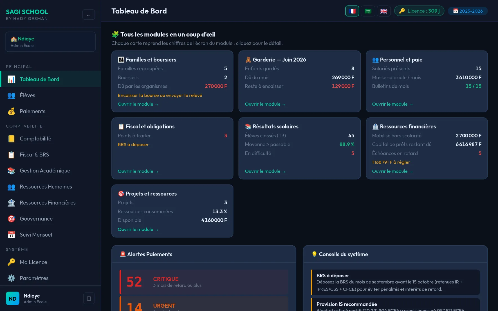
Les trois niveaux de lecture
Chaque chiffre du logiciel se lit à trois niveaux. Une bonne formation apprend à passer de l'un à l'autre :
- Le pilotage : Tableau de bord, Suivi mensuel, Gouvernance. On y voit les grandes masses, les tendances et ce qui doit alerter.
- Le métier : Élèves, Paiements, Garderie, RH, Académique, Ressources financières. Ce sont les opérations du quotidien, une par une.
- La preuve : Comptabilité et Fiscal, c'est-à-dire le journal, le grand livre, la balance et les états financiers. Rien n'y est saisi à la main : tout provient des opérations métier.
À dire dès la première minute d'une formation
La Comptabilité n'est pas un module de saisie. On n'y écrit pas d'écritures : on y lit celles que produisent les autres modules. Un comptable qui cherche un bouton « nouvelle écriture » ne le trouvera pas, et c'est voulu.
Les couleurs d'alerte sont les mêmes partout
Rouge signifie critique, orange urgent, jaune attention. La même couleur a le même sens dans la liste des élèves, le cahier mensuel, le tableau de bord et les relances. Il suffit de l'apprendre une fois.
Les licences et ce qu'elles ouvrent
Il existe cinq formules. Elles ne changent ni le logiciel installé ni les données : elles décident seulement des modules visibles dans la barre latérale. On change de formule immédiatement, sans rien perdre.
| Formule | Par mois | Par an | À qui elle s'adresse |
|---|---|---|---|
| Essai 30 jours |
gratuit | — | Découverte complète et sans engagement. La comptabilité est déjà ouverte, pour que le prospect voie de quoi le logiciel est capable. |
| Basic | 25 000 | 270 000 | Petite école qui veut d'abord maîtriser ses élèves et ses encaissements. La comptabilité n'est pas incluse. |
| Pro | 50 000 | 540 000 | École établie qui doit tenir une comptabilité SYSCOHADA et produire des états financiers. |
| Avancé | 90 000 | 972 000 | Groupe scolaire complet : paie, fiscalité, notes et bulletins, financements, gouvernance par projet. |
| Taxawu Daara | 20 000 | 216 000 | Daaras et écoles coraniques. Elle ouvre tous les modules de l'Avancé au tarif le plus bas du catalogue, avec en plus le suivi de mémorisation du Coran. |
L'argument qui fait vendre
Taxawu Daara ouvre exactement les mêmes modules qu'Avancé (comptabilité, paie, fiscalité, académique, ressources financières, gouvernance) pour 20 000 F par mois au lieu de 90 000. Ce n'est pas une version allégée : c'est le programme de l'éditeur pour équiper les daaras. Le commercial doit le présenter ainsi, sinon le prix bas fait douter de la valeur.
Quel module dans quelle formule
| Module | Essai | Basic | Pro | Avancé | Taxawu Daara |
|---|---|---|---|---|---|
| Tableau de bord | • | • | • | • | • |
| Élèves, familles, garderie | • | • | • | • | • |
| Paiements | • | • | • | • | • |
| Suivi mensuel | • | • | • | • | • |
| Comptabilité | • | — | • | • | • |
| Gestion académique | — | — | — | • | • |
| Ressources humaines | — | — | — | • | • |
| Fiscal & BRS | — | — | — | • | • |
| Ressources financières | — | — | — | • | • |
| Gouvernance | — | — | — | • | • |
| Paramètres & Ma licence | • | • | • | • | • |
Deux surprises à annoncer avant que le client ne les découvre
L'Essai ouvre la comptabilité, le Basic non. Une école qui fait l'essai puis souscrit un Basic perd le module Comptabilité. Il faut le dire au moment de la souscription, pas au premier appel au support.
Paramètres et Ma licence restent toujours accessibles, même quand la licence est expirée ou suspendue. L'école peut ainsi voir où elle en est et demander un renouvellement.
Expiration et délai de grâce
Le nombre de jours restants s'affiche en permanence dans la barre du haut (Licence : 310 j sur les captures). La pastille passe au rouge à l'approche de l'échéance et propose Renouveler. Nouveau
À la date d'échéance, l'accès n'est pas coupé tout de suite : le logiciel accorde sept jours de grâce. Ensuite, la barre latérale se réduit à Paramètres et Ma licence, et l'école ne peut plus saisir. Les données restent intactes et reviennent entièrement à la réactivation.
Une licence suspendue, elle, est coupée immédiatement, sans délai de grâce. C'est le levier réservé aux impayés.
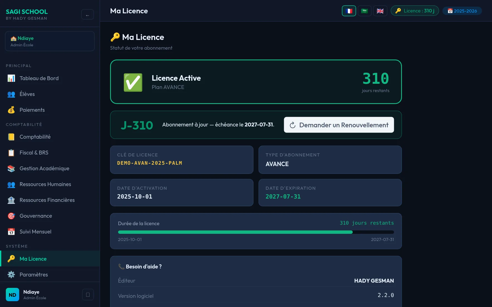
Premier démarrage
SAGI SCHOOL s'utilise de trois façons, avec exactement les mêmes écrans.
Le programme est installé sur l'ordinateur du secrétariat. Les données restent dans l'école et le logiciel fonctionne sans internet, ce qui compte là où la connexion est incertaine. La sauvegarde vers les serveurs HADY GESMAN part dès que la machine retrouve le réseau.
Rien à installer : on ouvre une adresse dans le navigateur. Plusieurs postes travaillent en même temps et HADY GESMAN peut intervenir à distance. Le bouton Installer l'app pose une icône sur le bureau. Nouveau Une connexion internet reste nécessaire en permanence.
C'est une variante du mode local pour les écoles qui ont plusieurs postes mais pas de connexion fiable. Sur le poste qui détient la base, on active Réseau › Partager avec les autres postes du réseau. Les autres postes ouvrent simplement l'adresse indiquée (http://adresse-du-poste:8765) dans Chrome, sans rien installer. Le poste serveur doit rester allumé pendant les heures de travail.
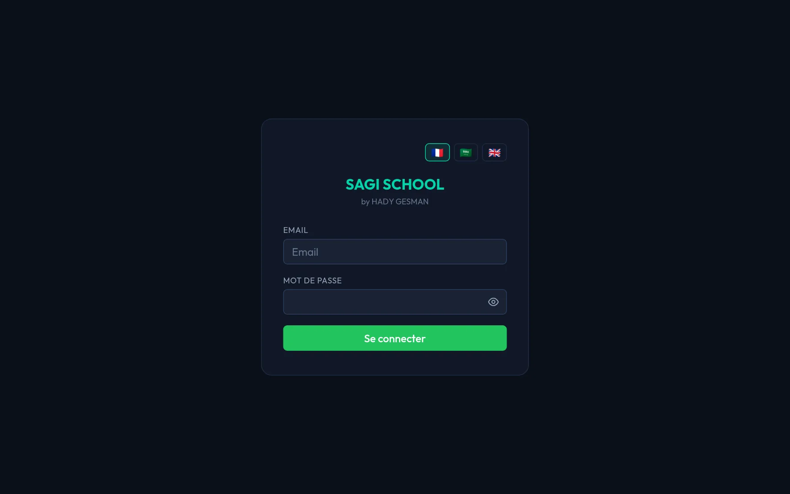
L'ordre à respecter, sans exception
Quand une installation tourne mal, c'est presque toujours que l'ordre a été inversé. Ce qui suit n'est pas une suggestion : chaque étape a besoin de la précédente.
- L'établissement. Nom, ville, téléphone, RCCM, NINEA, numéro d'autorisation, IA et IEF, nom du directeur, logo. Tout cela s'imprime sur les reçus, les bulletins et les certificats : le renseigner après coup oblige à réimprimer.
- L'exercice. Année scolaire, dates de début et de fin, nombre de mensualités, soldes de caisse, de banque et de mobile money au premier jour.
- Les sections et leurs tarifs. Inscription, mensualité, uniforme, fournitures, et le mode de facturation (au mois ou à la journée).
- Les services optionnels. Cantine, transport, assurance, activités : ce que la famille peut prendre en plus.
- Les règles d'échéance. À partir de quand une mensualité est due, et donc à partir de quand une famille est « en retard ».
- Les utilisateurs. Un compte par personne, avec le rôle qui correspond à son travail.
- Les élèves, un par un ou par import Excel. C'est seulement à ce stade que le tarif s'applique correctement.
L'erreur qui coûte le plus cher
Créer les élèves avant de saisir les tarifs. Les fiches sont alors rattachées à une section à 0 franc : le dû annuel est faux, les alertes sont fausses, et le suivi mensuel annonce 100 % de recouvrement dans une école qui n'a rien encaissé. L'onglet Santé de la migration le signale (« Sections sans tarif »), mais il faut ensuite reprendre chaque fiche.
Paramètres — le socle
Douze onglets décident du comportement de tout le reste. C'est le module qu'on ouvre le moins souvent, et celui qui génère le plus d'appels au support quand il a été rempli trop vite.
Un réglage enregistré s'applique tout de suite
Depuis la version 1.45.4, une modification de Paramètres est visible immédiatement sur tous les écrans et tous les postes. Si un réglage semble « ne pas prendre », il n'a pas été enregistré : chaque carte a son propre bouton Sauvegarder.
Infos École
Ce sont les informations qui figurent sur les documents officiels. Le logo s'importe ici (PNG ou JPG, moins d'un méga-octet) et apparaît ensuite en tête des reçus, bulletins, certificats et listes. Le RCCM et le NINEA ont une conséquence : dès qu'ils sont renseignés, le module Fiscal considère l'établissement comme immatriculé et calcule ses obligations.
Nouveau Les champs IA (inspection d'académie) et IEF (inspection de l'éducation et de la formation) s'impriment en tête des bulletins de notes, en français comme en arabe. La civilité et le nom du directeur signent le certificat de scolarité.
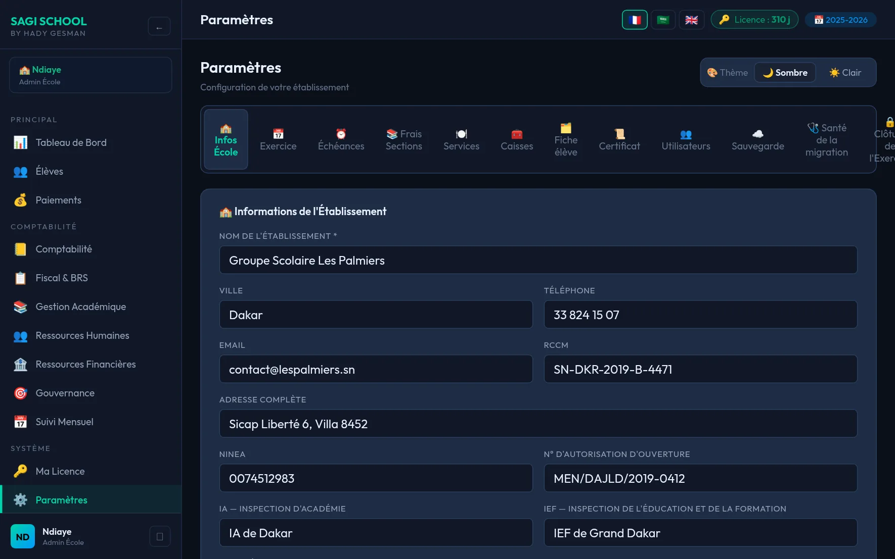
Exercice
L'exercice correspond à l'année scolaire. Le nombre de mensualités est le chiffre qui structure le plus le logiciel : il multiplie la mensualité pour donner le dû annuel de chaque élève. Une école qui facture neuf mois, d'octobre à juin, saisit 9, pas 12.
Les soldes initiaux de caisse, de banque et de mobile money sont le point de départ de la trésorerie. Sans eux, le logiciel part de zéro et tous les soldes affichés seront décalés de l'argent réellement en caisse le premier jour.
Le nom de l'année est libre : « 2025-2026 » aussi bien que « 2026 ». Le logiciel reprend toujours celui-ci, sans jamais le recalculer d'après le calendrier.
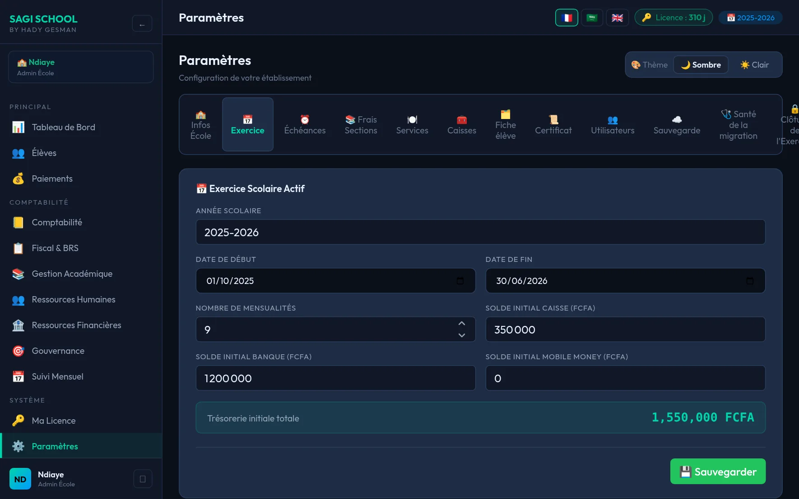
Échéances, rappels et garde du soir
La première carte répond à une seule question : à partir de quand une mensualité est-elle en retard ? Les écoles n'y répondent pas toutes de la même façon, et le logiciel s'adapte à chacune.
- Avant le mois : la famille règle juillet avant le début de juillet. C'est le fonctionnement des écoles qui encaissent d'avance.
- Dès le début du mois : la mensualité est exigible au jour choisi du mois en cours. C'est le réglage par défaut.
- À la fin du mois : le mois se paie une fois écoulé.
Deux cases s'y ajoutent, courantes au Sénégal : encaisser la première mensualité dès l'inscription, et encaisser la dernière dès l'inscription pour sécuriser le départ de l'élève. Ces mois-là deviennent exigibles à la date d'entrée, et non à leur tour dans le calendrier.
Nouveau La carte Garde du soir règle la facturation des enfants récupérés en retard : l'heure limite de récupération, l'heure à partir de laquelle on facture (la marge entre les deux est une tolérance) et le tarif par tranche. La première tranche va de l'heure limite jusqu'à l'heure pleine suivante, puis on compte une tranche par heure d'horloge.
Plus bas, la carte Rappels fixe le jour du mois où la relance s'ouvre, le dernier délai et le texte du SMS. Les enfants d'une même famille ne reçoivent qu'un seul message, adressé au responsable de la famille (voir Familles).
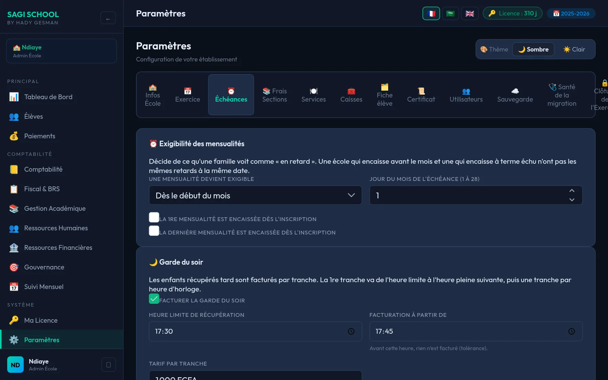
Aucun SMS ne part tant qu'on ne l'a pas demandé deux fois
Par sécurité, l'envoi est en mode simulation par défaut : les rappels sont préparés et journalisés, mais aucun message ne sort. Il faut à la fois renseigner la passerelle SMS du fournisseur et cocher « Envoyer réellement les SMS ». Faites relire le texte du rappel avant de l'activer : il partira d'un coup à des centaines de familles.
Frais Sections
Une section est une grille de tarifs, pas une classe. Les Palmiers en ont trois (Maternelle, Élémentaire, Collège) pour huit classes, plus une section Garderie facturée à la journée. Chaque section porte l'inscription, la mensualité, l'uniforme et les fournitures.
- Composer l'inscription détaille ce que couvrent les droits d'entrée (dossier, carte scolaire…). Le total ne change pas, mais la famille voit le détail sur son reçu.
- Facturation : Au mois ou À la journée. Nouveau En mode « À la journée », on saisit un tarif par demi-journée et par journée, et le dû de l'enfant vient de l'appel quotidien (voir Garderie).
- Formules. Nouveau Une même section peut proposer plusieurs mensualités selon l'horaire, par exemple une crèche 08 h-13 h, 08 h-17 h ou 08 h-19 h. Chaque élève suit une formule, et un changement de formule prend effet à partir d'un mois donné sans réécrire les mois passés.
- Barème mensuel. Il permet de fixer une mensualité différente pour certains mois, par exemple un mois de juin réduit.
- Ordre. Il décide de la place de la section dans les listes PDF.
- Renouvellement annuel, en haut de l'onglet. Quand il est activé, un élève déjà inscrit ne repaie pas l'inscription les années suivantes : il paie un renouvellement, en général moins cher. C'est la pratique courante des daaras. L'ancienneté exigée se compte en mois et se règle école par école.
| Section | Inscription | Mensualité | Uniforme | Fournitures | Dû annuel (9 mois) |
|---|---|---|---|---|---|
| Maternelle | 60 000 | 25 000 | 15 000 | 10 000 | 310 000 |
| Élémentaire | 75 000 | 30 000 | 18 000 | 12 000 | 375 000 |
| Collège | 90 000 | 40 000 | 20 000 | 15 000 | 485 000 |
Le dû annuel ne se saisit jamais. Le logiciel le recalcule à chaque affichage à partir de la section, de la formule, du nombre de mensualités, de la date d'entrée et des services souscrits. Aux Palmiers, l'assurance scolaire (5 000 F) s'y ajoute pour tous les élèves.
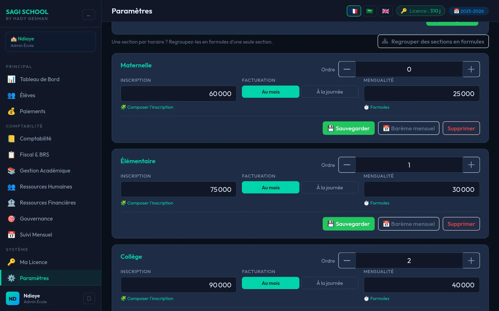
Services
Un service est facultatif et se souscrit élève par élève. Il a deux périodicités possibles : mensuel, ajouté au dû de chaque mois facturé, ou unique, dû une seule fois, à l'inscription ou à un mois précis.
Nouveau Un service peut avoir des frais d'adhésion (droit d'entrée au club, kimono…), dus la première fois seulement. Au guichet, le caissier voit si c'est la première adhésion de l'élève. La case 1er mois payé à l'inscription fait régler le premier mois du service en même temps que l'inscription.
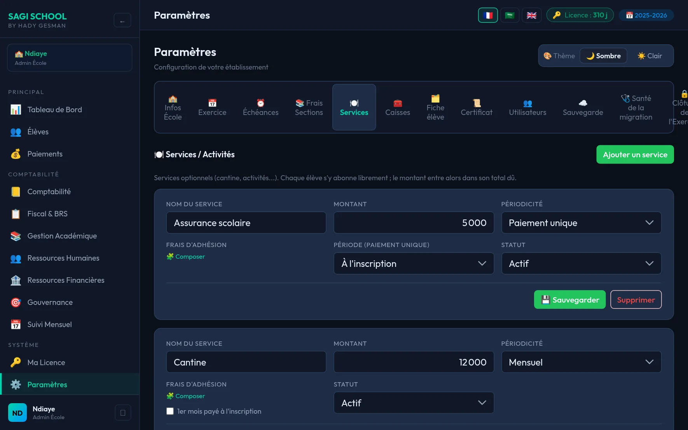
Caisses Nouveau
Une école qui encaisse la garderie ou la cantine à part veut savoir ce que contient chaque caisse. On crée ici une caisse par service (Caisse garderie, Caisse cantine…). Chacune a son propre compte de trésorerie, sous-compte du 571, créé automatiquement dans le plan comptable, avec son solde et son journal.
Au moment d'encaisser, on choisit la caisse : les espèces vont dans celle-ci. Les autres modes (Wave, Orange Money, virement) restent sur leur compte habituel. Une caisse qui a déjà servi ne peut plus être supprimée, seulement désactivée.
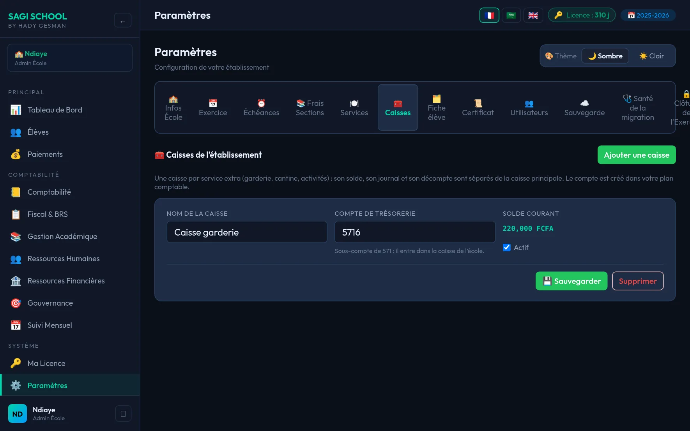
Fiche élève et certificat Nouveau
L'onglet Fiche élève ajoute les informations propres à l'école sans alourdir le formulaire commun : numéro d'extrait, régime alimentaire, personne autorisée à récupérer l'enfant… Chaque champ a un type (texte, texte long, nombre, date, liste, oui/non), un groupe (identité, parents, santé, autre) et peut être rendu obligatoire. Il apparaît dans le formulaire, sur la fiche et dans la fiche PDF.
L'onglet Certificat accepte le modèle Word de l'école, tel qu'elle l'imprime déjà. Les pointillés qui suivent « Nom et prénom », « Né(e) le … à … », « Classe », « Année scolaire », « Fait à … le … » sont remplis automatiquement pour chaque élève, et le reste du document n'est pas modifié. Sans modèle, le logiciel produit un certificat standard, sobre, signé par le directeur nommé dans Infos École.
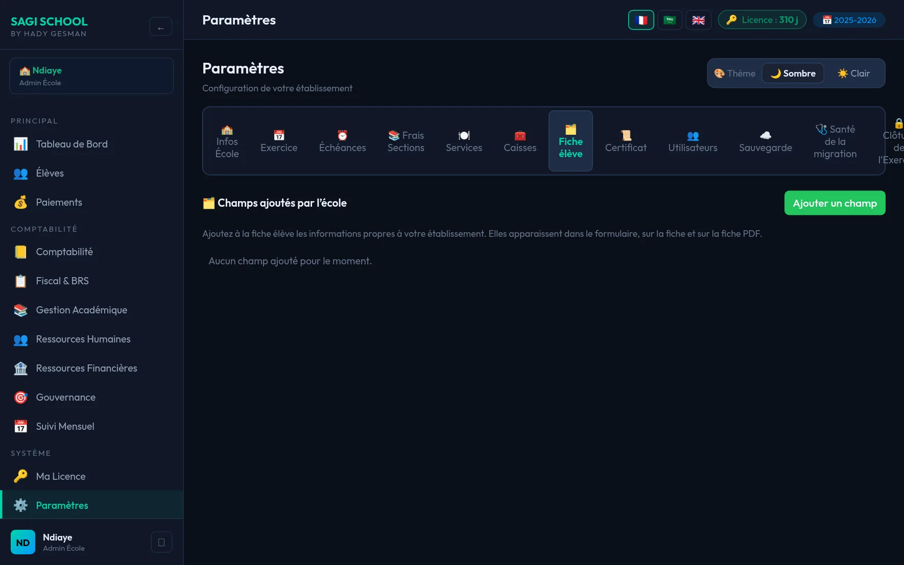
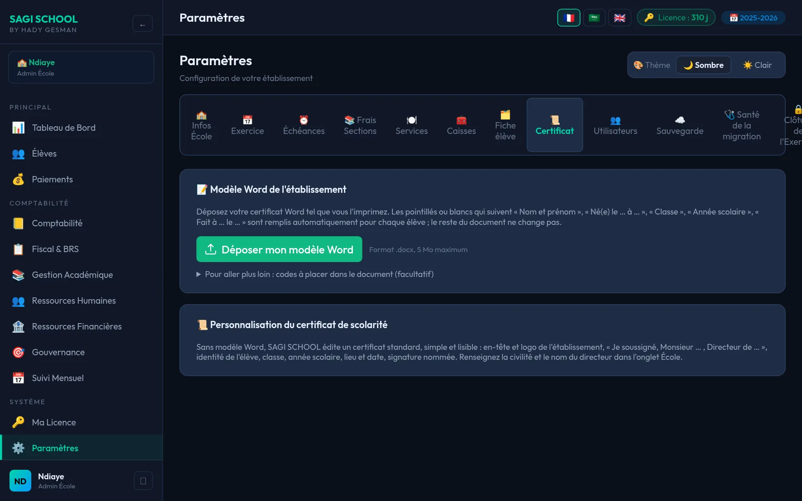
Utilisateurs et rôles
Un compte par personne, jamais de compte partagé : sinon le journal d'audit ne sert plus à rien.
| Rôle | Ce qu'il fait |
|---|---|
| Admin École | Le directeur ou le fondateur. Accès complet à son établissement, clôture d'exercice comprise. |
| Responsable Scolarité | Élèves, garderie, inscriptions, encaissements, certificats, notes. |
| Responsable Comptable | Comptabilité, charges, investissements, états financiers. |
| Responsable RH | Personnel, bulletins de paie, avances sur salaire. |
| Lecteur | Consultation seule. Utile pour un membre du conseil d'administration ou un expert-comptable externe. |
Nouveau Modules par utilisateur. À la création ou à la modification d'un compte, on peut choisir précisément les modules auxquels la personne a accès, au lieu de ceux de son rôle. Exemple : une surveillante qui ne voit que Élèves et Garderie. La licence reste le plafond : on ne peut pas ouvrir un module que la formule ne contient pas.
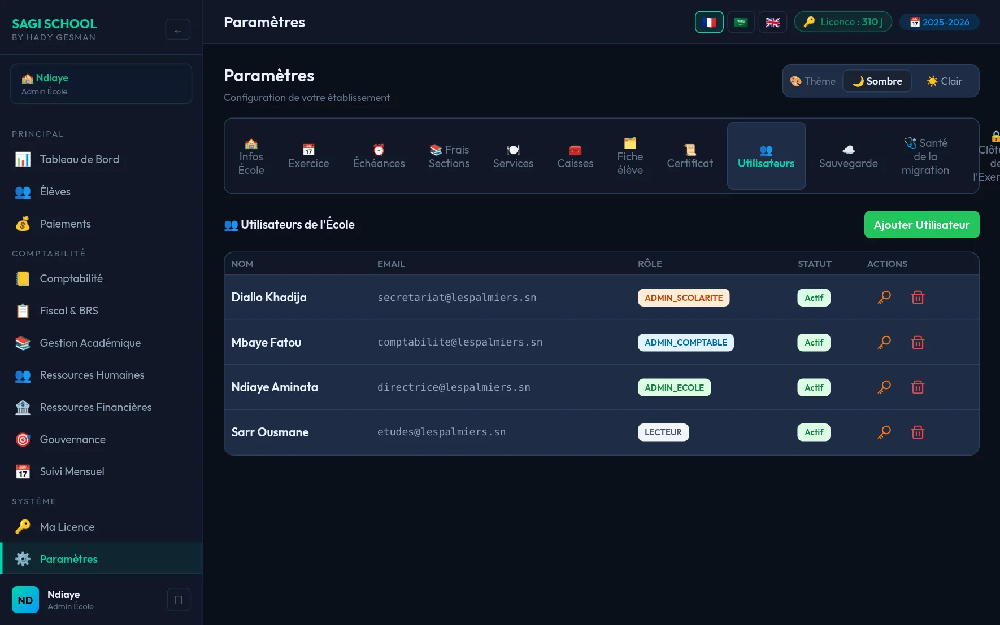
Santé de la migration
Cet onglet s'adresse aux écoles qui arrivent avec leur historique. Il liste ce qui reste à compléter : élèves sans situation financière, impayés antérieurs saisis, identité d'entrée incomplète, sections sans tarif, élèves sans section. Rien n'y est bloquant : l'école peut travailler et compléter au fil de l'eau. C'est aussi le premier écran à ouvrir quand une école appelle parce que « les chiffres sont bizarres ».
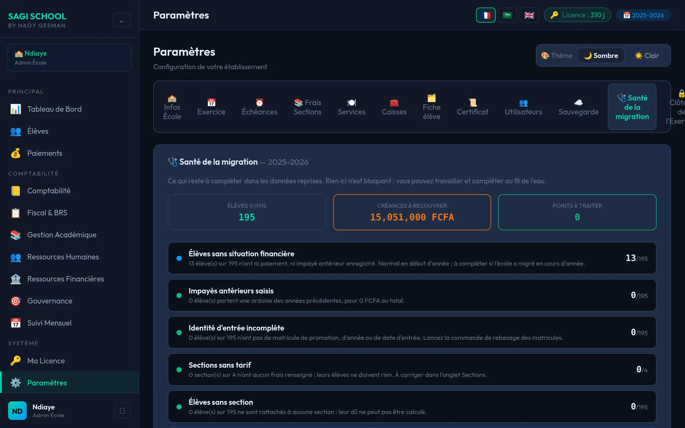
Élèves
C'est le cœur du logiciel. La fiche d'un élève ne contient pas seulement son identité : elle dit ce qu'il doit, ce qu'il a versé, ce qui reste, et le niveau d'alerte qui en résulte. Tous les autres modules s'appuient dessus.
Le haut de l'écran est organisé sur deux lignes. La première contient les vues : Liste des élèves, Prise en charge, Anciens élèves, Organismes, Familles. La seconde contient les actions : Garderie (visible seulement si l'école a une section à la journée ou la garde du soir), Documents, Importer Excel, Impayés antérieurs, Nouvel Élève.
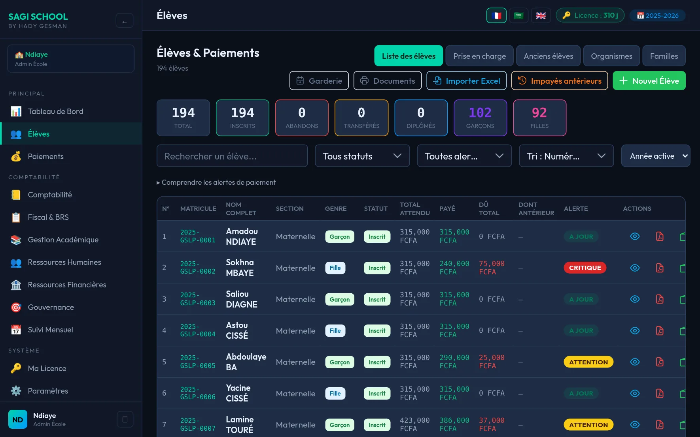
Les cinq niveaux d'alerte
L'alerte n'est pas saisie : elle est calculée à chaque affichage, en comparant ce que l'élève devait à la date du jour (selon la règle d'échéance de l'école) et ce qu'il a versé.
| Niveau | Ce qu'il signifie | Ce qu'on en fait |
|---|---|---|
| À jour | Rien d'exigible n'est impayé. | Rien. |
| OK — Reliquat | L'élève est à jour sur les mois échus ; il reste les mois à venir. | Rien. Ce n'est pas un retard. |
| Attention (jaune) | Environ un mois de retard. | Rappel par SMS ou au portail. |
| Urgent (orange) | Environ deux mois de retard. | Convocation du parent. |
| Critique (rouge) | Trois mois de retard ou plus. | Décision de la direction. |
« Tous mes élèves sont en critique » : l'appel classique de septembre
La cause est presque toujours la même : les tarifs de section sont à zéro, ou la règle d'échéance est réglée sur « avant le mois » alors que l'école encaisse à terme échu. Vérifiez ces deux points dans Paramètres avant de chercher plus loin. On ne corrige jamais une alerte élève par élève.
Inscrire un élève
- Élèves › Nouvel Élève. Le matricule est attribué par le système au format année-code école-numéro, par exemple 2025-GSLP-0036 pour le 36ᵉ élève entré en 2025-2026. Il ne se saisit pas et suit l'enfant jusqu'à sa sortie.
- Nom complet, section, genre. Le nom s'écrit « Prénom NOM », avec le nom de famille en majuscules : c'est ce qui permet le tri alphabétique par nom de famille, à l'écran comme dans toutes les listes PDF. La section fixe immédiatement le tarif. Une section à formules demande aussi la formule.
- Date de naissance. Si le jour est inconnu, ce qui est fréquent sur les extraits anciens, cochez « jour inconnu » et renseignez seulement le mois et l'année.
- Date d'entrée. Elle est décisive : un élève arrivé en février ne doit pas les mois d'octobre à janvier. Le logiciel calcule le prorata tout seul.
- Parents et tuteur. Au moins un numéro de téléphone valide, sinon les rappels ne partiront pas. Nouveau Profession et résidence de chaque parent. Le tuteur peut être une autre personne que les parents : oncle, grand-père, marabout.
- Santé et comportement. Allergies, traitements, maladies chroniques, et Nouveau les attitudes particulières à signaler chez l'enfant. Ces informations apparaissent sur la fiche PDF.
- Champs de l'école, s'il y en a (voir Paramètres › Fiche élève).
- Services souscrits. Cantine, transport, assurance : chacun modifie le dû annuel.
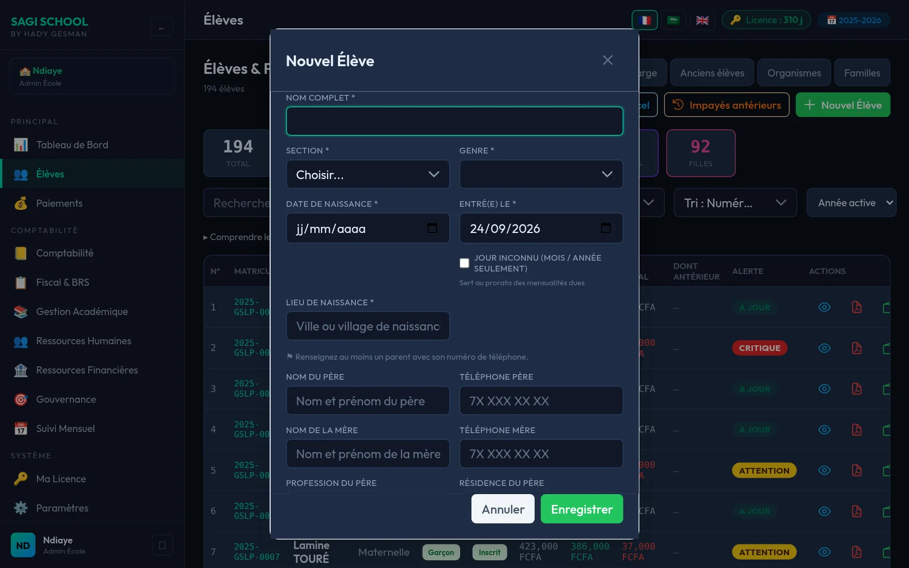
La fiche élève
L'icône en forme d'œil ouvre la fiche : identité, scolarité, parents, santé, et surtout la situation financière détaillée mois par mois. On y voit ce qui était dû, ce qui a été payé et ce qui reste, avec les mois en retard signalés.
En bas de la fiche, cinq boutons : Modifier, Parcours scolaire, Exporter la fiche (PDF à en-tête de l'école), Certificat de scolarité (en Word si l'école a déposé son modèle, sinon en PDF) et Situation financière. Ils répondent à 90 % des demandes d'un parent au guichet.
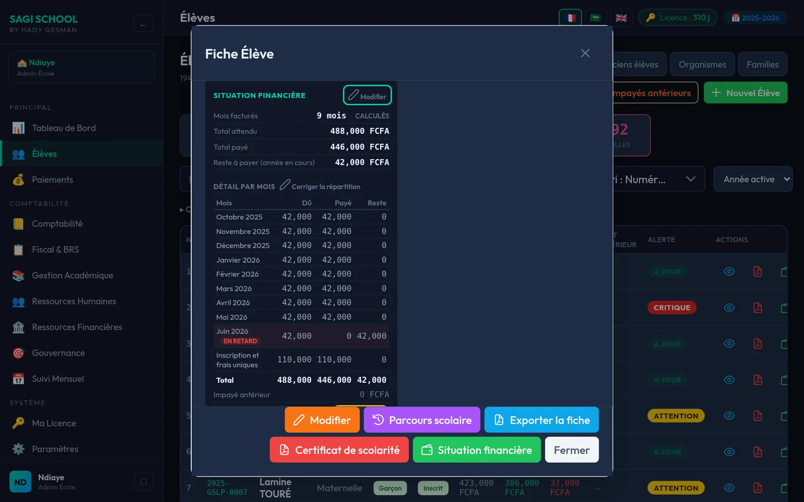
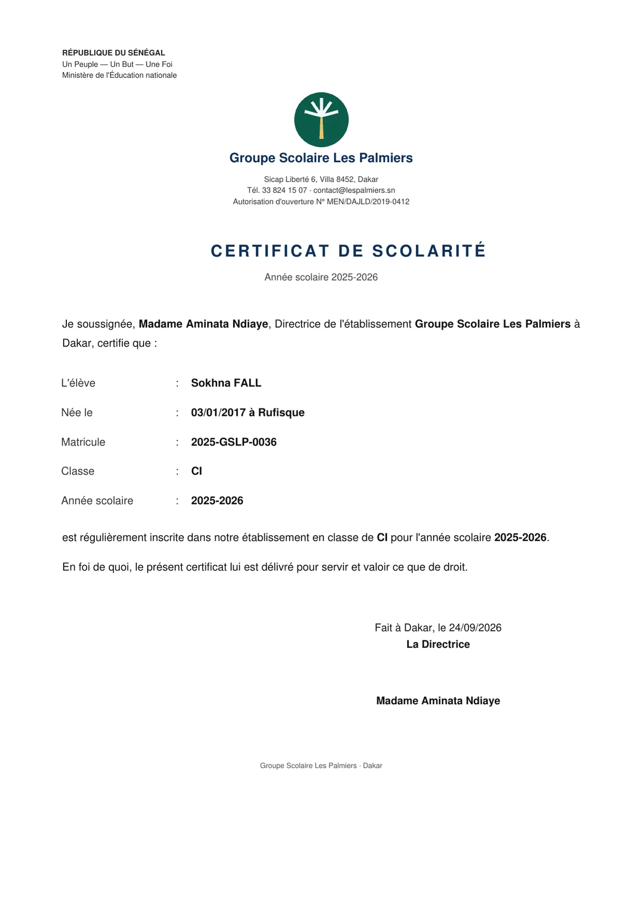
Prise en charge, bourses et boursiers
Il y a trois situations différentes, que le logiciel ne confond jamais :
- La prise en charge par l'école : orphelin, handicap, famille démunie. L'école renonce à une partie de ses frais, donc le dû de l'élève diminue réellement.
- La réduction fratrie : c'est aussi une remise, calculée par le barème de l'école selon le rang de l'enfant dans la famille (voir Familles).
- La bourse d'un organisme : une entreprise, une fondation ou l'État paie à la place de la famille. Le dû total ne change pas : il se partage entre ce que doit l'organisme et ce que doit la famille. L'alerte de retard ne porte que sur la part de la famille, et l'onglet Organismes suit ce que chaque organisme doit encore.
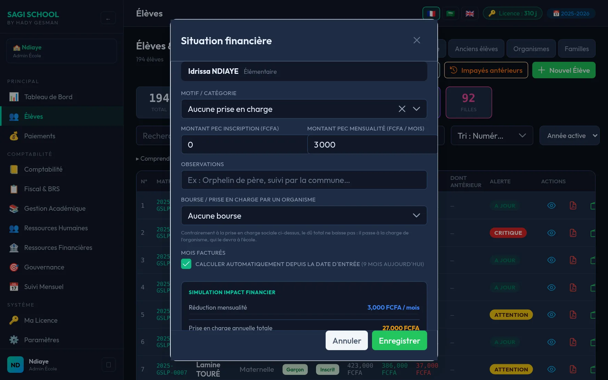
Pourquoi cette distinction compte pour la direction
Une bourse traitée comme une remise fait disparaître une créance bien réelle : l'école cesse de réclamer à l'organisme ce qu'il lui doit. En les séparant, le logiciel garde d'un côté la dette de l'organisme (compte 4112), de l'autre celle de la famille, et n'alerte que sur la seconde.
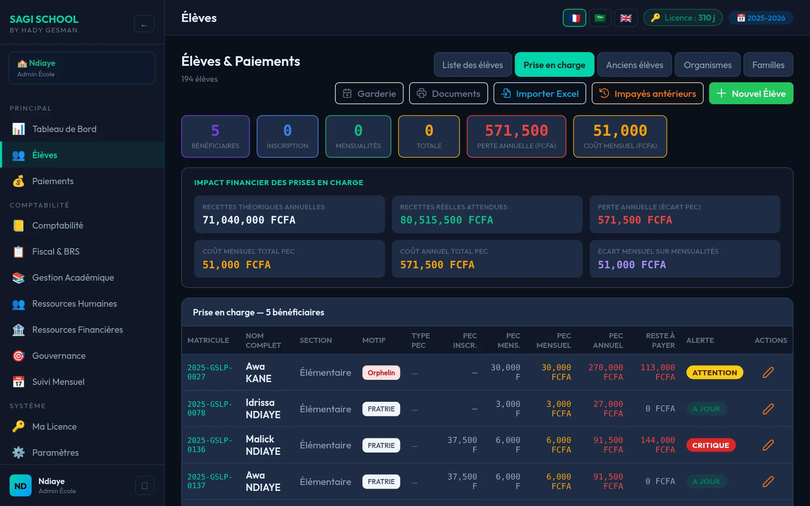
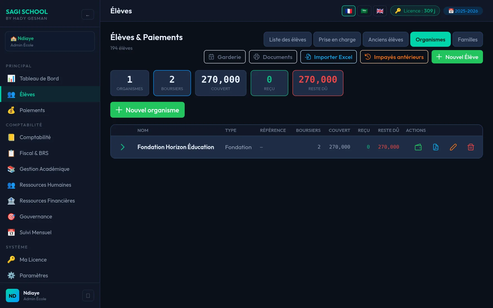
Encaisser la bourse d'un organisme Nouveau
Quand un ministère ou une fondation vire l'argent de ses boursiers, on l'encaisse depuis l'onglet Organismes avec l'icône portefeuille. On saisit le montant du virement et on clique sur Répartir : le logiciel le partage entre les boursiers, mois par mois, sur la part que l'organisme doit encore. La référence du virement ou du chèque se note avant d'encaisser.
Chaque part devient un règlement au nom de l'élève, marqué « organisme ». En comptabilité, la banque est débitée et la créance sur l'organisme (4112) soldée : la famille n'est jamais débitée de la bourse. En dépliant la ligne de l'organisme, on voit pour chaque boursier ce qui est couvert, reçu, restant dû, et chaque versement avec sa date et son numéro de pièce. L'icône PDF produit le relevé de l'organisme, la pièce à joindre à une relance.
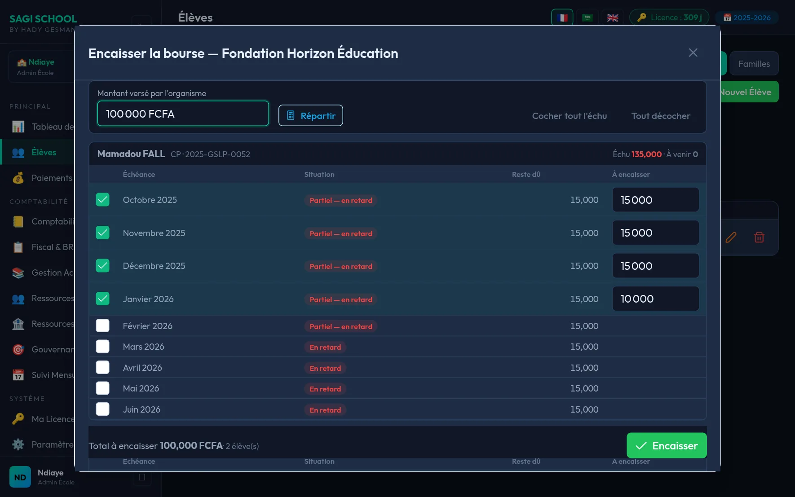
Sortie et réintégration Nouveau
Un élève qui quitte l'école passe au statut Transféré ou Abandonné, avec sa date de sortie. Il ne doit alors que ce qui était exigible au jour de son départ : les mois suivants disparaissent de son dû, et il ne pèse plus dans les alertes de l'école.
S'il revient, on le retrouve dans Anciens élèves et on le réintègre. Le logiciel montre d'abord ce que la réintégration change (mois dus, dette reprise), puis garde la trace des deux mouvements. On ne remet jamais une fiche sortie en « Inscrit » à la main, sauf si la sortie a été saisie par erreur le jour même.
Import Excel, impayés antérieurs et reprise
Une école qui passe à SAGI SCHOOL en cours d'année n'a pas à ressaisir ses effectifs. Importer Excel fournit un modèle ; on le remplit et on le renvoie. Une colonne « Famille » permet de regrouper les frères et sœurs dès l'import.
Impayés antérieurs sert à saisir, élève par élève, ce qui restait dû sur les années d'avant. Ces montants s'ajoutent à la dette de l'élève sans compter comme une recette de l'année.
À ne jamais faire
Saisir les règlements antérieurs à la bascule comme des paiements ordinaires. La trésorerie et le compte de résultat grossiraient de tout l'historique de l'école. Ce qui a été réglé avant la bascule se déclare par la reprise (Situation financière › Corriger la répartition) : la situation de l'élève est ajustée sans créer de recette ni toucher la trésorerie.
Documents
Le bouton Documents déplie deux exports PDF : la liste financière (attendu, payé, reste par élève) et la liste nominative (une liste de classe, sans montants). Le menu Ordre des listes PDF choisit le groupement (par classe, par section ou toute l'école) et l'ordre (alphabétique par nom de famille ou par matricule). Le menu Classe limite les deux listes à une seule classe, pour que chaque titulaire reçoive la sienne.
Familles et fratries
« M. Ndiaye a cinq enfants inscrits. » Regrouper les frères et sœurs évite de saisir cinq fois les mêmes coordonnées, donne le total de ce que doit la famille, et n'envoie qu'un seul rappel au lieu de cinq.
Regrouper ne change aucun montant : le dû reste calculé fiche par fiche. La famille est une vue et un point de contact, pas un nouveau débiteur.
- Regrouper les fratries. Le logiciel propose les groupes qu'il déduit des numéros de téléphone des parents, jamais du nom seul. Un groupe « sûr » porte un seul nom de famille ; un groupe « à vérifier » en mélange plusieurs (famille recomposée, ou deux foyers qui partagent un numéro). L'école coche ce qu'elle valide et crée tout d'un clic.
- Désigner le responsable. Chaque famille a un ou plusieurs responsables (père, mère, tuteur) ; le principal est celui qu'on appelle. Des parents séparés restent une seule famille, et chaque règlement note qui a payé.
- Réduction fratrie (facultatif). Le barème fixe, rang par rang, une remise en pourcentage ou en montant, séparément sur l'inscription et sur la mensualité. Le rang suit l'ancienneté dans l'école. La ligne du rang le plus élevé vaut pour tous les enfants suivants. On voit ce qui change pour chaque enfant avant d'appliquer, et une prise en charge d'un autre motif (orphelin, par exemple) n'est jamais écrasée.
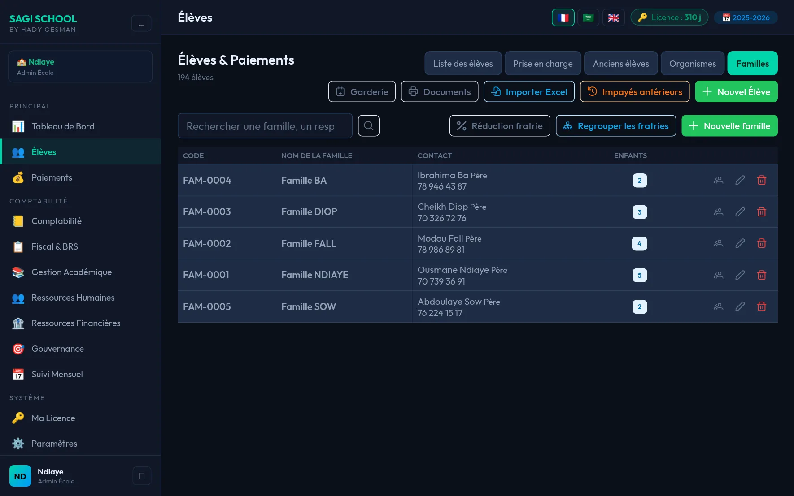
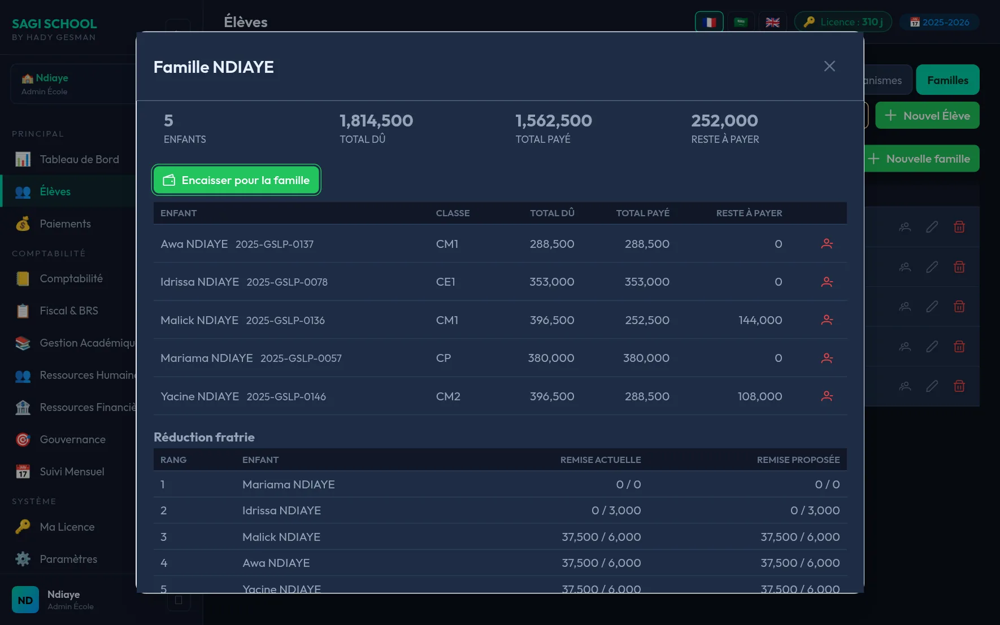
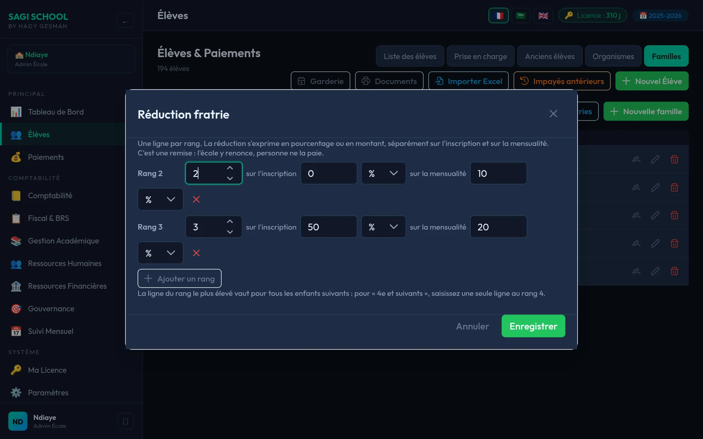
Encaisser pour toute la famille
Dans la fenêtre de la famille, Encaisser pour la famille reprend la logique du guichet pour toute la fratrie. Chaque enfant montre ses échéances : impayé antérieur, frais d'entrée, uniforme, services, puis chaque mois, marqués En retard ou À venir. On coche ce que le parent règle, y compris des mois à venir : une famille peut payer d'avance. Le montant de chaque ligne se corrige pour un acompte.
Deux raccourcis : Cocher tout l'échu, ou saisir le montant versé et cliquer sur Répartir. Le logiciel sert alors le plus ancien dû d'abord, tous enfants confondus. Avec la case Inclure les mois à venir, ce qui dépasse l'échu est imputé d'avance sur les mois suivants. Sans elle, le surplus est signalé et le caissier décide.
On choisit ensuite le mode, la caisse, la date et qui a payé, puis Encaisser. Chaque ligne devient un règlement ordinaire, avec les mêmes écritures qu'au guichet : la mensualité en 706, la cantine et les autres services en 758. La famille reçoit un seul reçu qui détaille chaque enfant et chaque mois réglé. Pour un enfant boursier, la part attendue de l'organisme n'est jamais réclamée à la famille.
Nouveau Le bouton Situation financière (PDF) produit le document que le parent emporte : chaque enfant, chaque mois, le dû, le payé, le reste et la situation (soldé, en retard, à venir), avec le total à la charge de la famille.
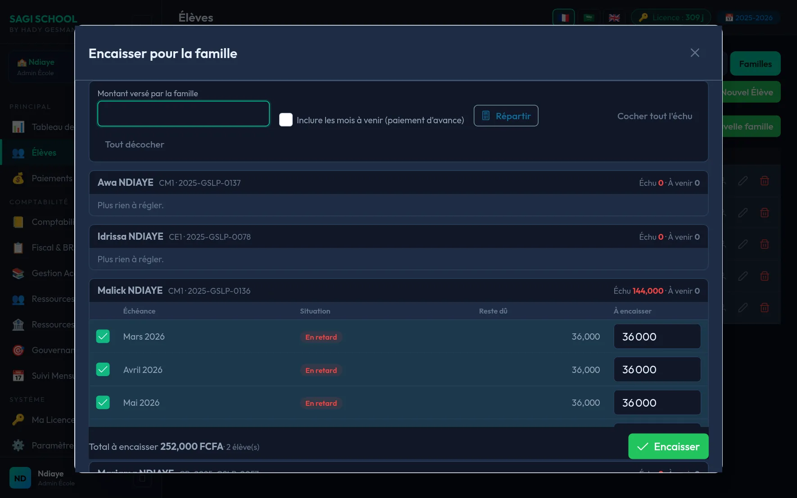
Garderie et garde du soir
Pour les crèches et les écoles qui gardent des enfants à la journée : le dû naît de la présence, et la famille paie au rythme qui lui convient (au jour, à la semaine ou au mois).
L'écran s'ouvre depuis le bouton Garderie du module Élèves. Il concerne les enfants inscrits dans une section facturée à la journée (voir Paramètres › Frais Sections).
L'appel du jour
Chaque matin, on marque chaque enfant : Absent, ½ journée ou journée. Le total du jour s'affiche en haut, puis on clique sur Enregistrer l'appel. Le tarif est figé au moment de l'appel : changer le prix plus tard ne modifie pas les journées passées.
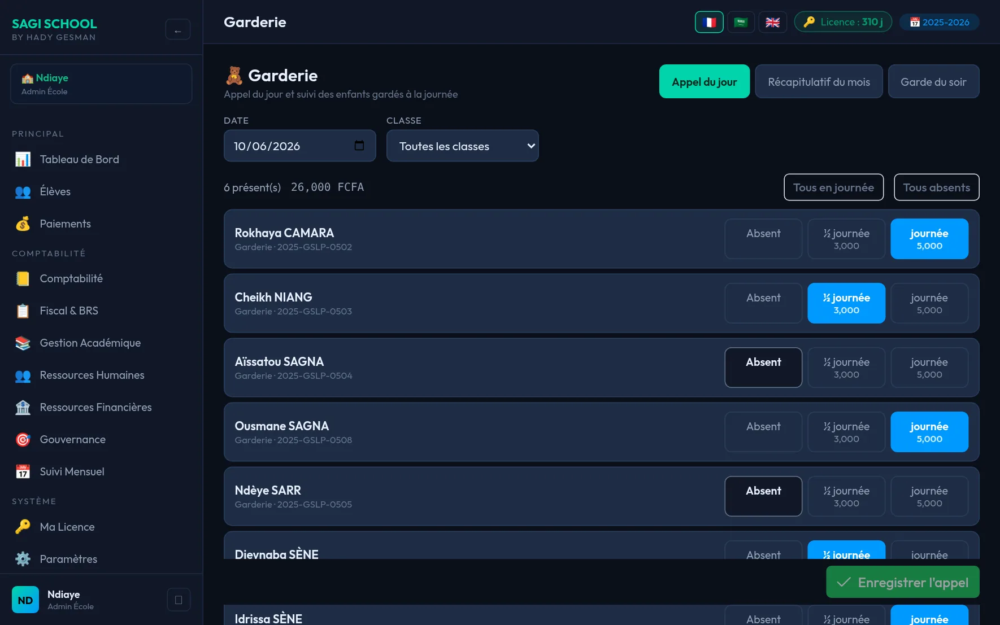
Le récapitulatif du mois et l'encaissement
Le récapitulatif compte, pour chaque enfant, ses demi-journées et ses journées, le dû, ce qui a été versé et ce qui reste. Le bouton Encaisser de chaque ligne enregistre le règlement (montant, mode, caisse) et imprime un ticket 80 mm. C'est le même chemin qu'un paiement au guichet, avec les mêmes écritures.
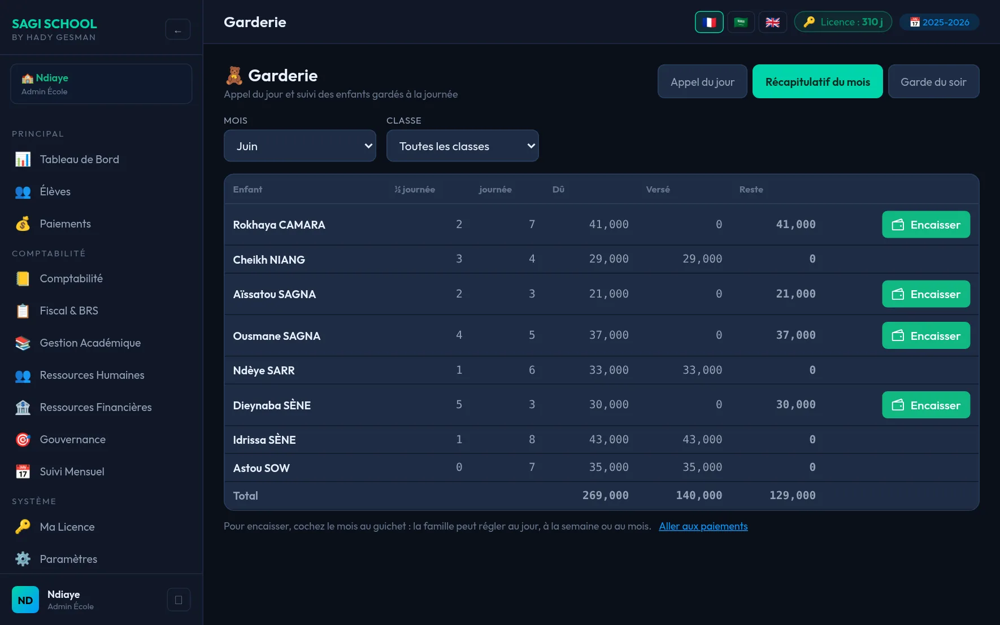
La garde du soir
Pour un enfant récupéré après l'heure limite, on saisit la date, le nom de l'enfant et son heure de départ. Le logiciel calcule le nombre de tranches et le montant selon les réglages de Paramètres › Échéances. Ce montant s'ajoute au dû du mois de l'enfant. Il s'encaisse soit au guichet avec la mensualité, soit tout de suite avec le bouton Encaisser de la ligne. Sur le reçu, il apparaît en toutes lettres (« dont garde du soir 2 000 F »).
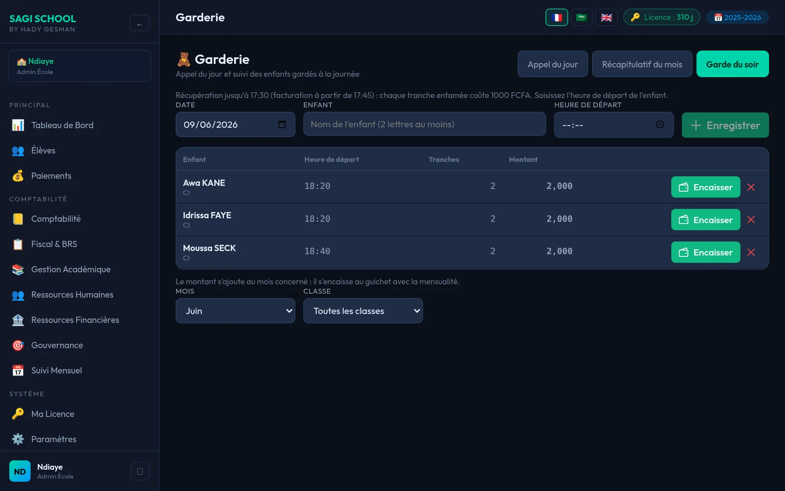
Où va cet argent en comptabilité
La garderie, la garde du soir, la cantine et les activités sont des produits accessoires (compte 758). Le compte 706 est réservé au service éducatif : inscription, réinscription, mensualités. Le compte de résultat les présente donc séparément, ce que l'expert-comptable attend.
Paiements
C'est l'écran le plus utilisé de la journée. Chaque règlement saisi ici produit d'un seul geste le reçu de la famille, la ligne du suivi mensuel, l'écriture comptable et la mise à jour de l'alerte de l'élève.
Quatre onglets : Saisie des Paiements, Charges, Mon cahier mensuel et Proformas. Un bandeau jaune rappelle en permanence la situation du mois : combien de familles n'ont pas encore payé, ce qui reste à encaisser et les charges budgétées à régler.
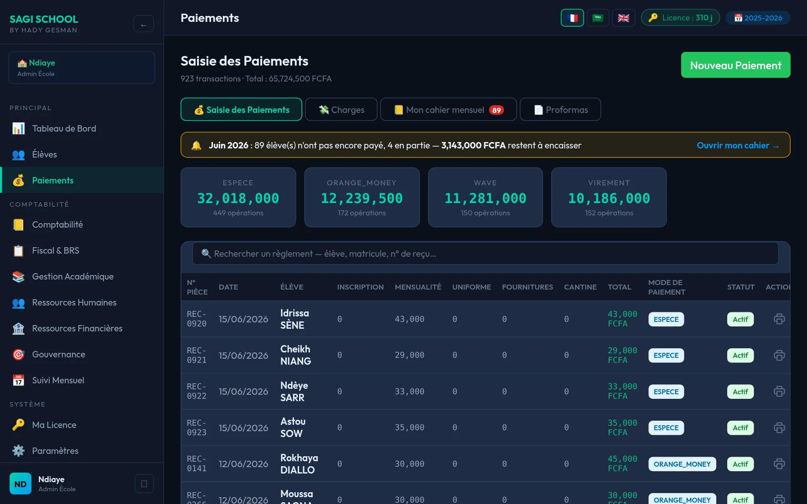
Encaisser un règlement
- Nouveau Paiement, puis chercher l'élève par nom, matricule ou nom du père. La recherche affiche la section, la date de naissance, le père et son téléphone, ainsi qu'une étiquette quand l'élève bénéficie d'une prise en charge. De quoi départager deux homonymes sans quitter l'écran.
- Lire le bandeau de situation : total annuel dû, déjà versé, reste à payer. Le caissier voit tout avant d'encaisser.
- Choisir le type : Inscription ou Mensualité.
- Cocher les mois concernés. Les mois déjà réglés portent une coche. Un parent qui paie trois mois d'avance en coche trois : le logiciel sait alors que ces mois ne sont plus dus. Nouveau On peut encaisser d'avance avant le début de l'année : le règlement se rattache au premier mois.
- Vérifier les services auxquels l'élève est abonné (cantine, transport…). Ils sont proposés avec le montant des mois cochés, et les frais d'adhésion la première fois.
- Saisir le montant versé. Le logiciel indique aussitôt si l'échéance est soldée ou s'il reste un reliquat.
- Préciser qui paie (la famille ou un organisme boursier) et le mode. Si la famille panache espèces et Wave, cochez multi-mode et ventilez : chaque canal sera crédité du bon montant. Nouveau Pour les espèces, choisissez la caisse qui les reçoit.
- Enregistrer + Reçu produit le PDF prêt à imprimer, au format A4, A5 ou ticket 80 mm. Le fichier porte le nom de l'élève, ce qui évite de chercher parmi dix « recu.pdf ». Enregistrer seul convient quand la famille ne veut pas de papier.
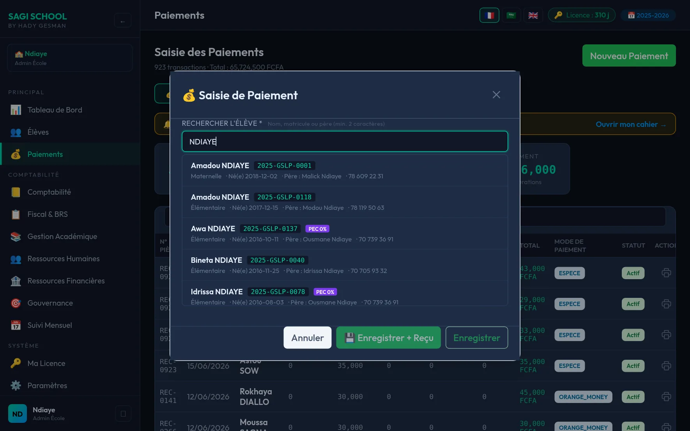
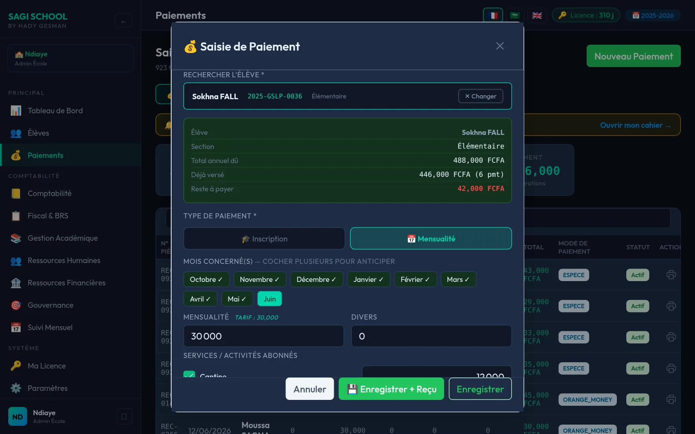
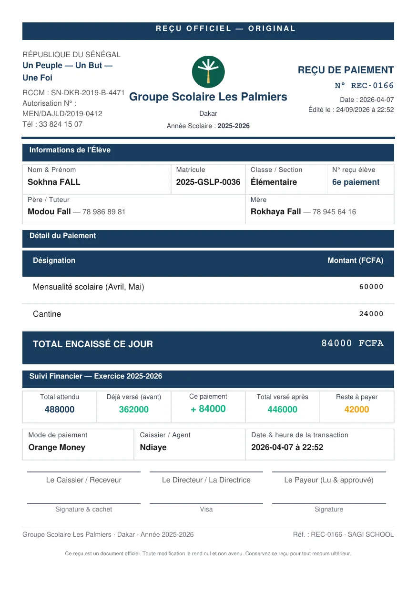
Annuler ou corriger un règlement
Un reçu ne s'efface jamais : le SYSCOHADA l'interdit. Deux gestes sont possibles depuis la ligne du règlement :
- Annuler : le règlement passe au statut Annulé et le logiciel écrit des contre-écritures qui neutralisent les premières. La trace des deux reste au journal.
- Modifier : même mécanique, suivie de l'enregistrement du bon montant. C'est la seule façon de rectifier une erreur de saisie.
Mon cahier mensuel Nouveau
C'est le cahier que tient le caissier, mais tenu tout seul. Pour le mois choisi, il affiche ce qui devait entrer, ce qui est entré, ce qui reste, l'argent réellement entré en caisse, et les charges budgétées à régler. Dessous, la liste nominative se filtre : Pas encore payé, Partiel, Déjà payé, Charges budgétées. Chaque ligne donne le téléphone à appeler. Le bouton Télécharger le PDF sort la liste de relance du mois.
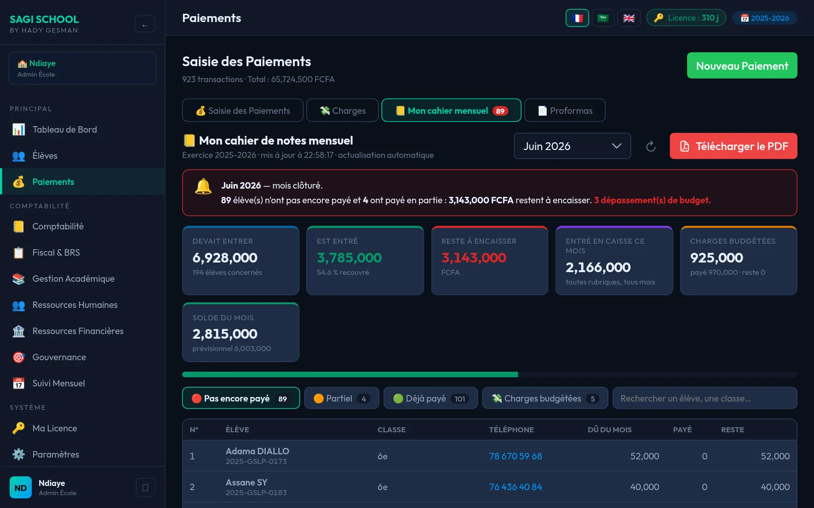
Proformas Nouveau
Une facture proforma chiffre ce qu'une famille aura à payer, sans rien encaisser ni rien écrire en comptabilité. Deux cas : une famille qui veut régler le reste de l'année d'un coup (le chiffrage part alors de l'échéancier réel de l'élève), ou une famille qui se renseigne avant l'inscription (on choisit la section, la date d'entrée et les services, et le prorata est calculé). Une remise peut être accordée pour un règlement en une fois. Chaque proforma porte un numéro PF-AAAA-NNNN et une date de validité.
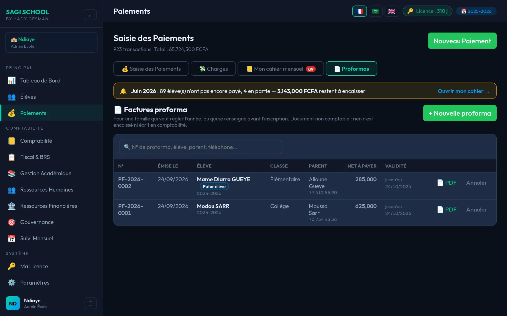
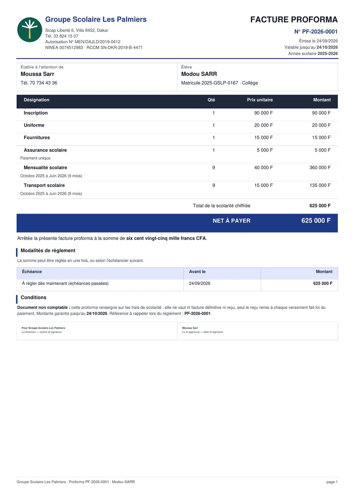
Charges
L'onglet Charges enregistre les dépenses de fonctionnement : loyer, électricité, eau, internet, entretien, fournitures. On saisit le libellé, le montant, la date et le canal de règlement ; le logiciel propose le compte comptable d'après le libellé et écrit lui-même les écritures. Les pièces justificatives (facture, reçu) s'attachent à la charge avec le trombone. Un import Excel permet de reprendre un cahier de dépenses existant.
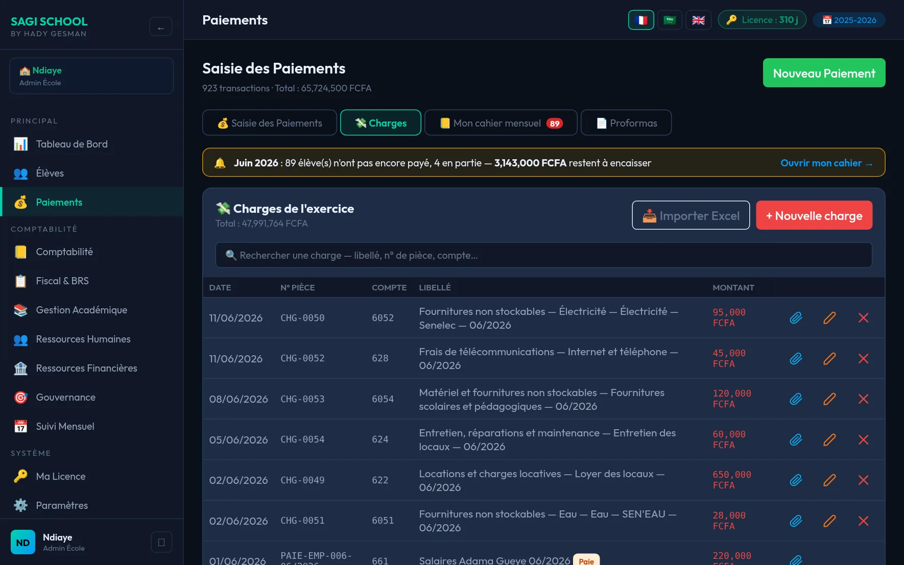
Suivi mensuel
C'est le module de pilotage du recouvrement. Il répond aux quatre questions que la direction se pose chaque mois : combien devait-on encaisser, combien a-t-on encaissé, qui n'a pas payé, et reste-t-il une marge une fois les charges payées ?
Évolution mensuelle
Mois par mois : la scolarité envisagée, ce qui a été encaissé, ce qui reste et le taux de recouvrement. C'est ce tableau qui montre à une direction que son recouvrement s'effondre en mai, bien avant que la trésorerie ne le lui apprenne. Les onglets suivants détaillent par section, par élève, et listent les plus gros impayés.
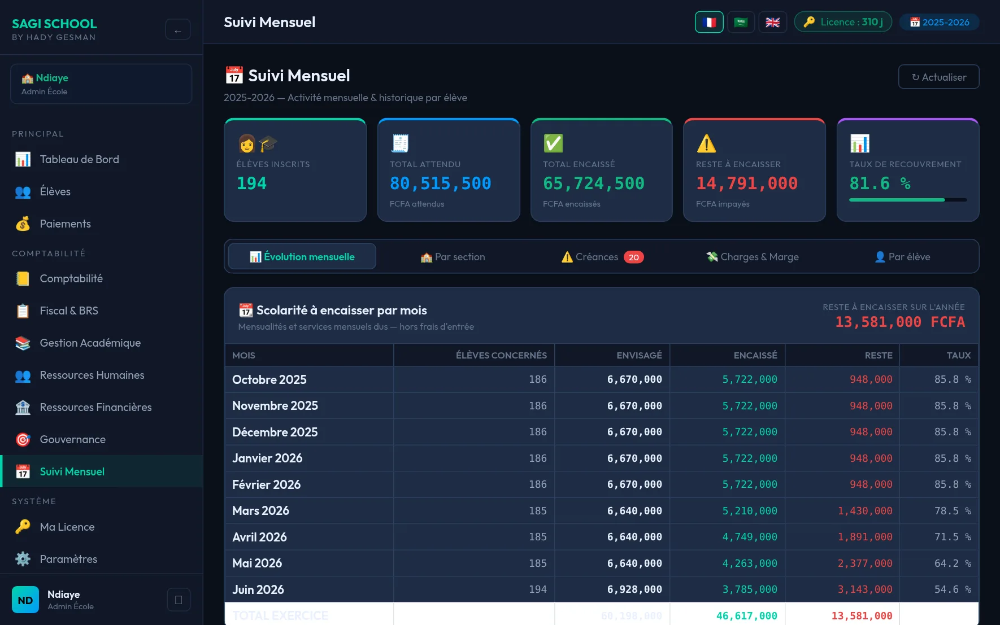
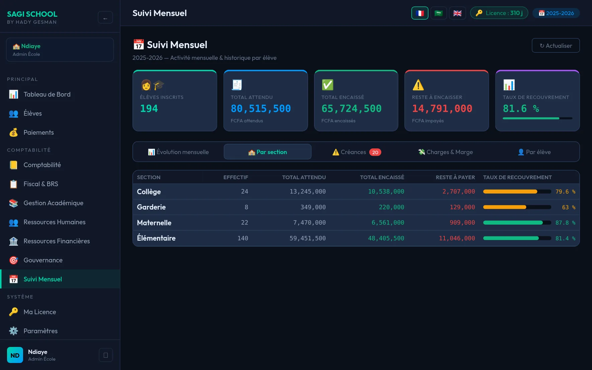
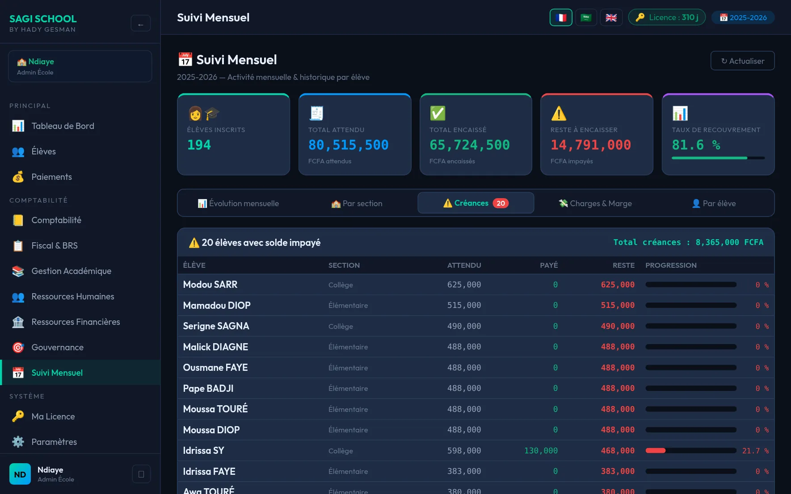
Charges & Marge
C'est le seul écran qui rapproche mois par mois ce qui est entré, ce qui est sorti en charges, ce qui est parti en investissement, et ce qui reste. Une marge négative en début d'année n'a rien d'alarmant, car les investissements de rentrée pèsent lourd. En revanche, une marge cumulée qui ne repasse jamais au positif est un signal que la direction doit voir tôt.
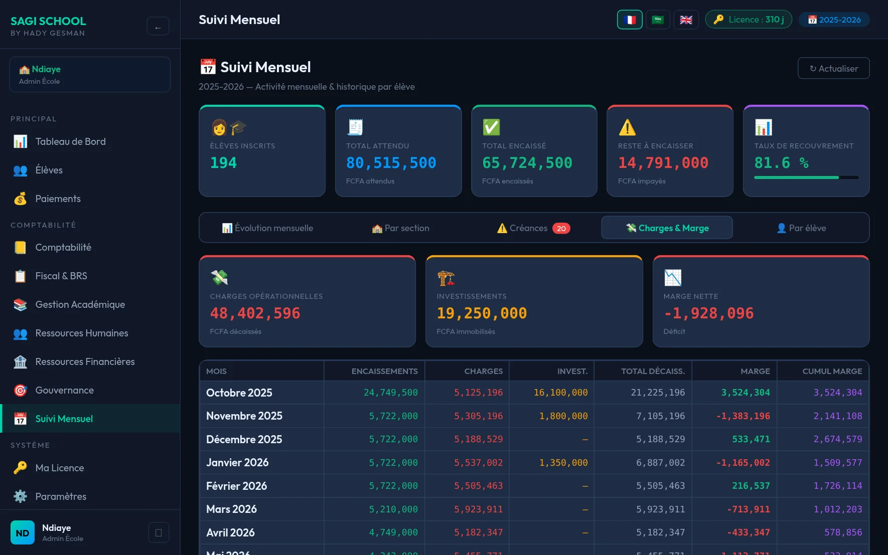
Marge de trésorerie et résultat comptable ne sont pas le même chiffre
Un investissement fait sortir toute la trésorerie l'année de l'achat, mais ne pèse sur le résultat que par son amortissement annuel. Le minibus des Palmiers coûte 12 500 000 F en caisse en octobre, et 2 500 000 F de charge par an pendant cinq ans. D'où une marge de trésorerie faible à côté d'un résultat comptable nettement bénéficiaire. Les deux sont justes.
C'est l'explication qu'un directeur réclame chaque année. Le formateur doit savoir la donner avec les deux écrans côte à côte.
Comptabilité
Une comptabilité SYSCOHADA Révisé complète, alimentée uniquement par les autres modules. Aucune écriture ne se saisit ici : on lit, on contrôle, on imprime.
Chaque opération métier produit ses écritures en partie double au moment où elle est enregistrée. Un règlement de scolarité constate la créance sur la famille, le produit de l'exercice et l'encaissement sur le bon canal de trésorerie, puis solde la créance. Une charge écrit la dette fournisseur, puis son règlement. Un bulletin de paie écrit le salaire brut, les cotisations salariales et patronales, les retenues fiscales et le net versé.
Le comptable de l'école n'a donc pas besoin de connaître le plan SYSCOHADA pour que la comptabilité soit juste. Il doit savoir la lire, et c'est ce que la formation lui apprend.
Huit onglets : Journal, Grand Livre, Balance, ETAFI (les quatre états de synthèse), Historique, Plan Comptable, Budget et Investissement. Le sélecteur Exercice, en haut, permet de relire une année clôturée, en lecture seule. Le bouton Exporter PDF s'adapte à l'onglet ouvert.
Journal, grand livre et balance
Le journal présente toutes les écritures dans l'ordre chronologique, avec leur origine. Les filtres du haut isolent une famille d'opérations : Paie, Scolarité, Charges, Avances, Investissement, Amortissement, Budget mensuel.
Le grand livre regroupe les écritures par compte, avec les totaux au débit et au crédit et le solde. La balance reprend les mêmes comptes classés par classe SYSCOHADA, avec les soldes d'ouverture, les mouvements de la période et les soldes de clôture. C'est le document que réclame l'expert-comptable.
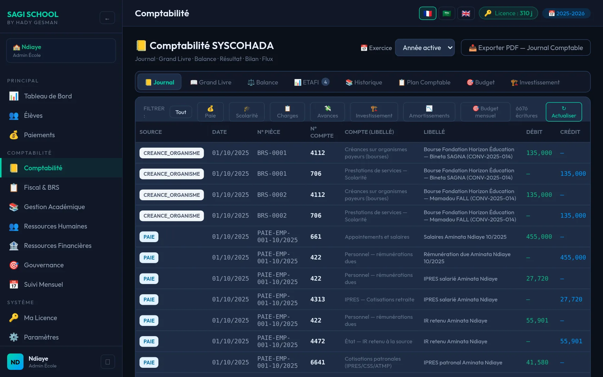
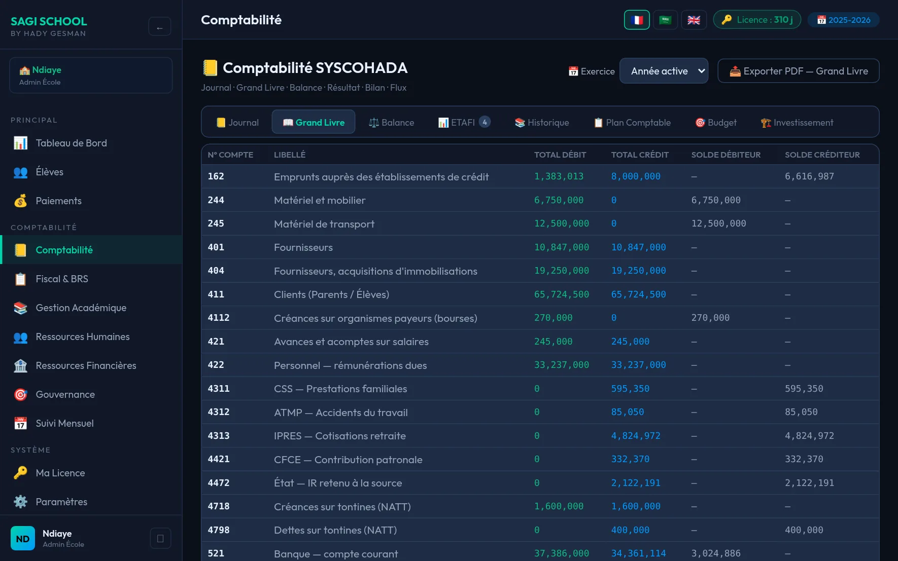
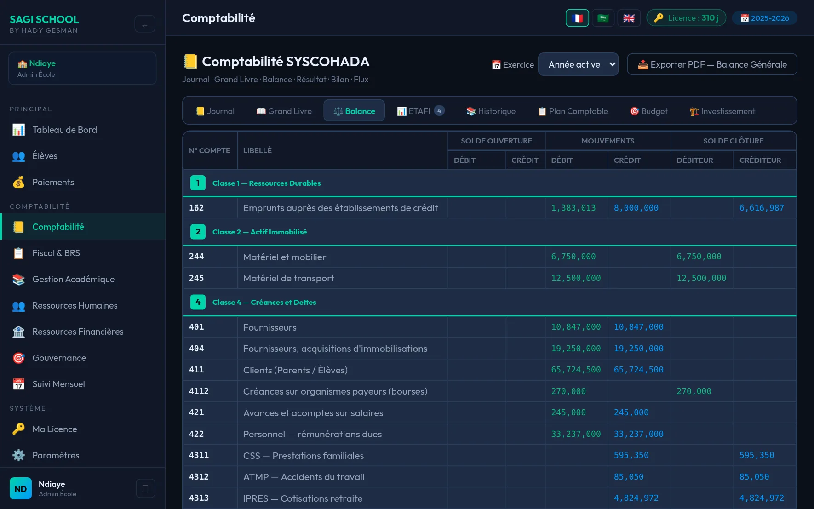
Les comptes à connaître
| Compte | Ce qu'il porte |
|---|---|
| 411 | Ce que doivent les familles. |
| 4112 | Ce que doivent les organismes boursiers. |
| 706 | Le service éducatif : inscription, réinscription, mensualités. |
| 758 | Nouveau Les produits accessoires : cantine, garderie, garde du soir, activités, assurance. |
| 571 · 5716… | La caisse principale et les caisses par service. |
| 521 · 5521… | La banque, Wave, Orange Money et les autres canaux mobiles. |
| 890 | Les à-nouveaux : dettes reprises d'une année précédente. |
ETAFI — les états financiers de synthèse
Quatre états sont produits automatiquement et s'exportent en PDF :
- Bilan : actif immobilisé, actif circulant et trésorerie d'un côté ; capitaux propres, dettes financières et passif circulant de l'autre.
- Compte de résultat : produits, charges et résultat net.
- Flux de trésorerie : flux d'exploitation, d'investissement et de financement.
- Notes annexes.
Le logiciel détecte seul le système applicable (normal ou minimal de trésorerie) d'après le chiffre d'affaires de l'exercice, et adapte la présentation.
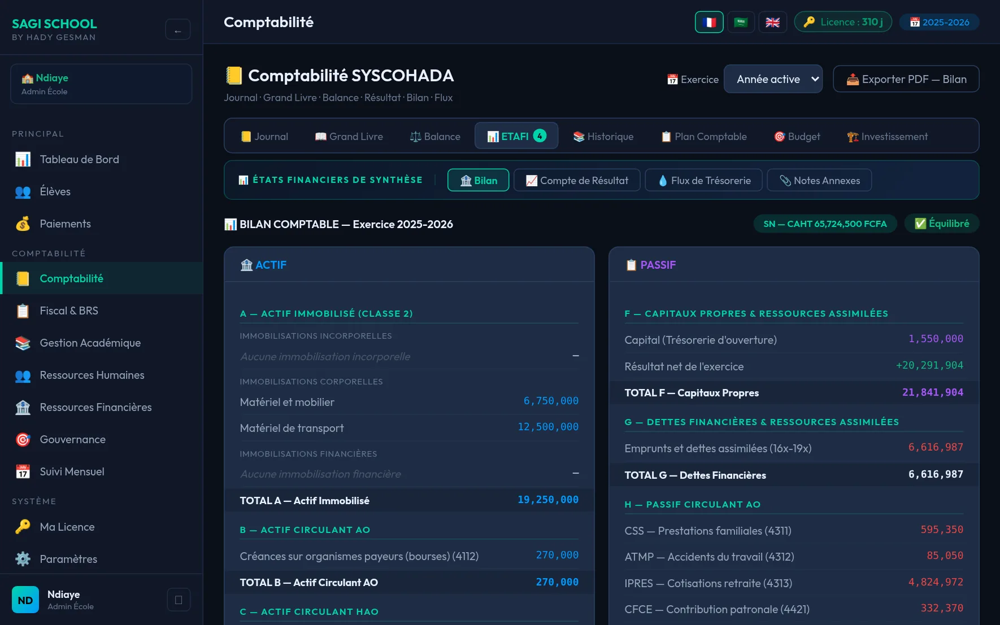
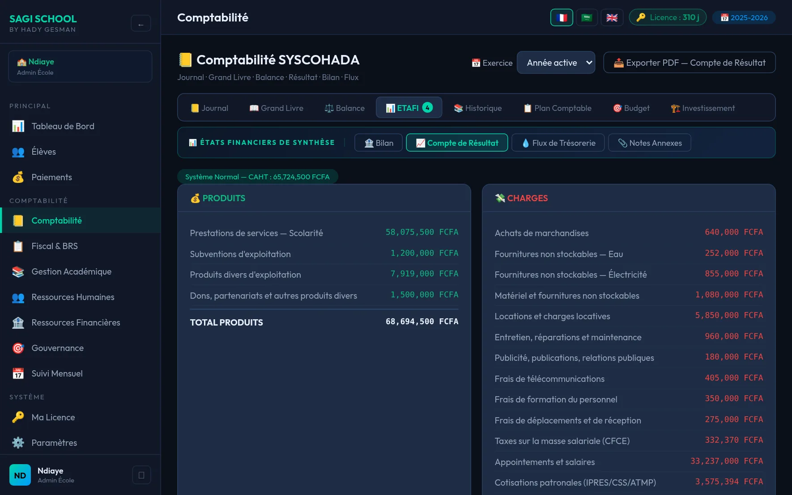
Budget
Le budget prévisionnel se saisit poste par poste et mois par mois. En face, le logiciel affiche le réalisé tiré des écritures, et l'écart. Une ligne dont le réalisé dépasse la prévision ressort immédiatement. Le réalisé est net : une charge annulée n'y compte plus. Une ligne peut être rattachée à un projet et à une ressource (voir Gouvernance).
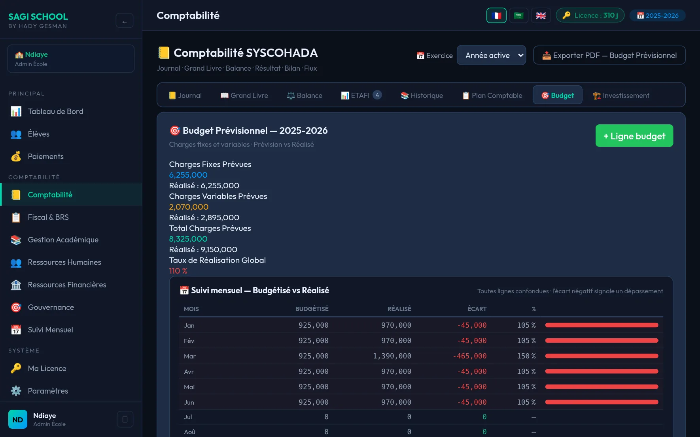
Investissement
Les biens durables (véhicule, mobilier, informatique, bâtiment) ne sont pas des charges. On les enregistre ici avec leur valeur d'entrée et leur durée d'utilisation ; le logiciel calcule l'annuité d'amortissement, tient la valeur nette comptable et écrit la dotation. Le règlement peut être immédiat ou différé, et payé sur plusieurs canaux.
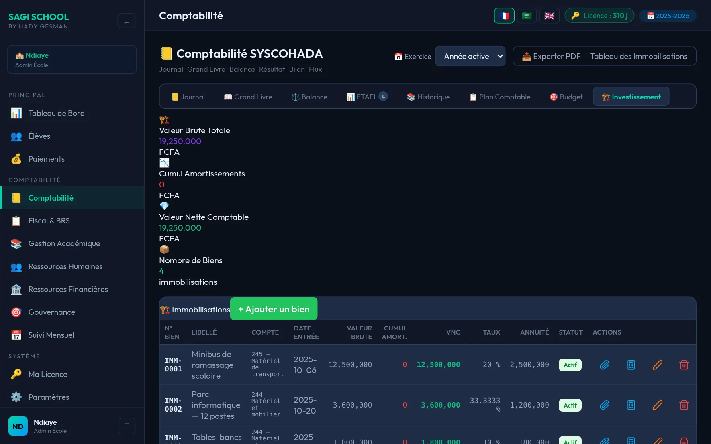
Charge ou investissement ?
La règle enseignée en formation : si le bien sert au-delà de l'année scolaire, c'est un investissement. Une ramette de papier est une charge ; soixante tables-bancs sont un investissement. Passer un minibus en charge écrase le résultat de l'année et fait disparaître le bien du bilan.
Fiscal & BRS
Le module qui dit à l'établissement ce qu'il doit à l'administration, quand, et sur quelle base. Le calcul se fait sur ses propres écritures, selon le cadre fiscal sénégalais.
Trois onglets : Déclarations sociales, Obligations de l'établissement et Conseils.
Déclarations sociales
Le bordereau de règlement des salaires (BRS), mois par mois : masse salariale brute, IPRES salarial et patronal, CSS et ATMP, IR retenu, CFCE, total à verser, date limite et statut. Les chiffres viennent des bulletins de paie validés dans le module RH.
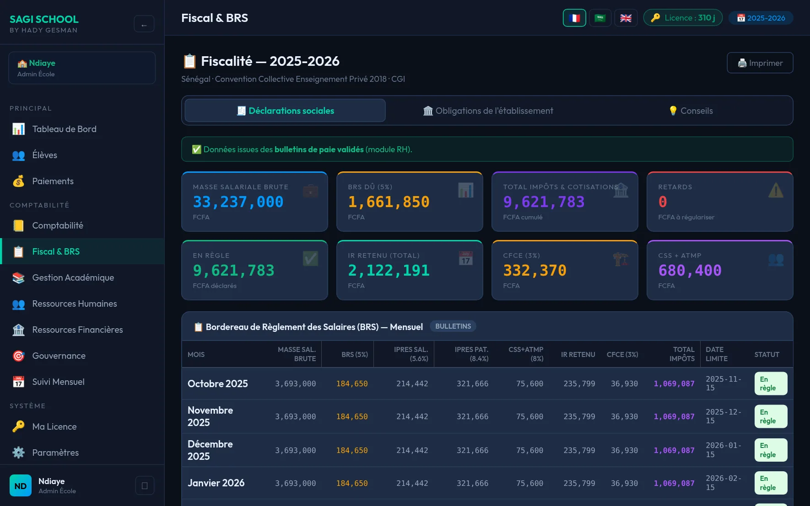
Obligations de l'établissement
Le calcul s'active dès que le RCCM et le NINEA sont renseignés dans Paramètres. Chaque obligation est présentée avec sa base, son taux, son montant, sa périodicité et son échéance.
| Obligation | Base retenue | Échéance |
|---|---|---|
| IS / IMF | 30 % du résultat estimé, ou l'impôt minimum forfaitaire (0,5 % des produits, avec un plancher de 500 000 F et un plafond de 5 000 000 F) s'il est plus élevé. | Acomptes le 15 février et le 30 avril, solde avec la déclaration. |
| CFCE | Pourcentage de la masse salariale brute, au taux fixé dans RH › Paramètres fiscaux. Comptabilisée automatiquement à la validation des bulletins. | Mensuelle, avec le BRS. |
| TVA | L'enseignement scolaire et universitaire est exonéré. Les activités annexes (cantine, transport) peuvent être taxables. | Mensuelle si applicable. |
| CEL | Contribution économique locale, ex-patente. Le logiciel n'en connaît pas les bases : le montant se saisit d'après l'avis de la collectivité. | Annuelle. |
| Retenues sur salaires | IR, TRIMF, IPRES et CSS, calculées et comptabilisées par le module RH à la validation des bulletins. | Le 15 du mois suivant, avec le BRS. |
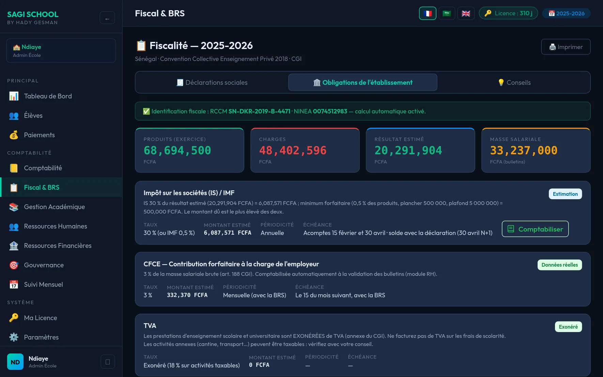
Conseils
Le logiciel surveille la situation de l'établissement et fait remonter ce qu'il faut faire : un BRS à déposer avant le 15, une provision d'impôt à constituer parce que le résultat est positif, un exercice échu à clôturer, des impayés à suivre. Chaque conseil est classé Attention ou Info et rattaché à son domaine.
Ce que le module n'est pas
C'est une aide au pilotage, pas un cabinet fiscal. Les montants sont des estimations calculées sur les écritures de l'école : ils remplacent un tableur, pas l'avis d'un expert-comptable. Le dire clairement en formation évite un malentendu coûteux.
Ressources humaines
Le personnel, la paie au barème sénégalais et les avances sur salaire. Un bulletin validé écrit lui-même ses écritures : salaire brut, cotisations, retenues, net à payer.
Le personnel
Trois catégories d'employés (enseignants, administration, personnel d'appui) et cinq types de contrat (CDI, CDD, vacataire, stagiaire, prestataire). Le statut cadre, le nombre d'enfants et la situation matrimoniale ne sont pas là pour décorer : ils entrent directement dans le calcul de l'impôt et des allocations.
Le mode de paiement de chaque salarié (banque, caisse, Wave, Orange Money) décide du compte de trésorerie débité au moment du règlement.
Nouveau Une barre de recherche (nom, matricule, poste, téléphone) et un filtre Présents / Partis / Tous. Un salarié qui quitte l'école n'est pas supprimé : on enregistre son départ (date et motif), et aucun bulletin ne peut plus être produit après ce mois. La suppression n'est possible que pour une fiche sans aucun historique comptable, c'est-à-dire créée par erreur.
Produire la paie du mois
- Vérifier les paramètres fiscaux une fois par an : taux IPRES du régime général et des cadres, plafonds, CSS, ATMP, CFCE, prime de transport. Le logiciel est livré avec les barèmes en vigueur ; on n'y touche qu'en cas de changement réglementaire.
- Saisir les avances du mois, s'il y en a, avant de générer les bulletins.
- Générer les bulletins du mois. Le calcul part du salaire de base, ajoute primes et indemnités, déduit les cotisations salariales, l'impôt et les avances, et donne le net.
- Nouveau Absences et retards : indiquez le nombre de jours d'absence et d'heures de retard. Le logiciel propose une retenue (1/30ᵉ du salaire de base par jour, 1/173,33ᵉ par heure), que l'on peut corriger. Elle est déduite du brut, donc des cotisations. Une note d'explication est alors obligatoire, et elle s'imprime sur le bulletin.
- Contrôler les bulletins en brouillon. C'est le dernier moment où tout se corrige librement.
- Valider. Les écritures partent au journal. Le bulletin n'est plus modifiable.
- Payer, puis imprimer les bulletins pour les remettre aux salariés.
Annuler un bulletin libère son mois
Un bulletin validé par erreur s'annule (l'icône barrée) : ses écritures sont neutralisées, et on peut en générer un nouveau pour le même mois. On ne cherche pas à le modifier.
Avances sur salaire
Une avance accordée en cours de mois est imputée automatiquement sur le bulletin suivant, quelle que soit sa date. L'imputation est plafonnée au net à payer : si l'avance dépasse ce que le salarié doit toucher, le solde est reporté sur le bulletin d'après, au lieu de donner un net négatif. L'avance peut être versée sur plusieurs canaux et rattachée à un projet.
Le régime de paie se choisit avant le premier bulletin
Paramètres fiscaux propose deux régimes : Complet, pour un établissement affilié à l'IPRES et à la CSS, et Simplifié, sans cotisations ni allocations familiales, pour une structure non affiliée. Changer de régime après avoir validé des bulletins rend l'année incohérente : la question se tranche à l'installation.
Gestion académique
Les classes, les matières et leurs coefficients, la saisie des notes, le calcul des moyennes et des rangs, les bulletins, le suivi de chaque élève. Pour les daaras, le suivi de mémorisation du Coran s'y ajoute.
Six onglets : Paramétrage, Saisie Notes, Résultats, Analyse, Historique et Suivi pédagogique, plus Mémorisation pour les daaras.
Paramétrage — à faire une fois, et bien
- Le découpage de l'année : trimestres, semestres ou périodes, et combien. Le vocabulaire choisi ici se retrouve sur tous les bulletins.
- Nouveau Établissement hybride : à cocher pour une école qui suit un programme français et un programme arabe. Chaque matière est alors rattachée à un programme, et chaque programme a ses bulletins, sa moyenne et son rang. Le bulletin arabe s'imprime de droite à gauche.
- Nouveau Calcul de la moyenne, le réglage le plus important de l'onglet (voir l'encadré plus bas).
- Les classes, rattachées à leur niveau et à leur section : CI, CP, CE1… L'ordre est niveau › section › classe.
- Les matières, classe par classe, avec leur coefficient et leur barème (/5, /10, /20, /30…). L'icône de copie reprend les matières d'une classe vers d'autres classes.
- Les types d'évaluation et leur poids : une composition de poids 2 compte double par rapport à un devoir de poids 1.
- La règle. Moyenne des matières : chaque matière est ramenée au même barème, puis on fait la moyenne selon les coefficients (une matière sur /5 compte autant qu'une matière sur /20). Total des points : on additionne toutes les notes et on divise par le total des barèmes, comme le font beaucoup d'écoles à la main (145 points sur 150 donnent 9,67 sur 10).
- Moyenne sur : le barème du niveau, ou /10, ou /20 pour toute l'école.
- Deux décimales : arrondies (9,666 donne 9,67) ou tronquées (9,666 donne 9,66).
Chaque matière s'affiche toujours sur son barème (« 8,33/10 ») ; seule la moyenne générale est ramenée au barème choisi. Changer l'un de ces réglages efface les moyennes déjà calculées de l'année : il faut ensuite relancer Calculer Moyennes pour chaque classe et chaque période.
Section et classe ne sont pas la même chose
La section est une grille de tarifs : elle décide de ce que paie la famille. La classe est le groupe pédagogique : elle décide de ce que l'élève apprend et de la façon dont il est classé. Un élève sans classe n'apparaît dans aucun calcul de moyenne : c'est la première chose à vérifier quand un bulletin manque.
Saisir les notes
On choisit la classe, la matière et la période : les évaluations existantes s'affichent en cartes. On clique sur une carte pour saisir toute la classe sur un seul écran, puis on enregistre. + Évaluation en crée une nouvelle, avec son type, sa date et son barème. Une case « absent » remplace la note quand l'élève n'a pas composé : une absence n'est pas un zéro et ne compte pas comme tel.
Nouveau Chaque carte porte deux icônes : modifier (titre, date, barème, type) et supprimer. Modifier le barème ne convertit jamais les notes déjà saisies. Le logiciel refuse de descendre sous une note existante et nomme les élèves concernés. Supprimer emporte les notes de l'évaluation ; le logiciel annonce combien avant de le faire.
Résultats et bulletins
Calculer Moyennes produit, pour la classe et la période choisies, la moyenne de chaque élève dans chaque matière, son rang dans chaque matière, sa moyenne générale, son rang dans la classe et son appréciation. En tête : moyenne de la classe, meilleure et plus faible moyenne, taux de réussite.
Nouveau Bulletins de la classe produit un seul PDF avec deux bulletins côte à côte sur une feuille A4 à l'italienne, à taille réelle, avec un trait de découpe au milieu. L'en-tête porte le logo, l'IA et l'IEF. Les matières en arabe s'impriment correctement même sur le bulletin français.
Suivi pédagogique Nouveau
Choisissez d'abord la classe, puis l'élève (tant qu'aucun élève n'est choisi, l'écran reste vide). On voit alors l'évolution de sa moyenne d'une période à l'autre, matière par matière, face à la moyenne de la classe, avec ses points forts, ses points faibles, ce qu'il doit améliorer et des recommandations. La fiche pédagogique se télécharge en PDF, en français ou en arabe, pour le conseil de classe ou la rencontre avec les parents.
Pour les daaras — le suivi de mémorisation
Sous licence Taxawu Daara, l'onglet Mémorisation suit la mémorisation du Coran : parcours du ndongo, progression par sourate et par subdivision (juz, hizb, nisf, rub'), et rapport bilingue arabe-français. Les deux riwaaya, Warsh et Hafs, sont prises en charge.
Ressources financières
Tout l'argent qui entre dans l'établissement en dehors de la scolarité : dons, subventions, partenariats, collectes, tontines, prêts. Rien ne se saisit en comptabilité : chaque opération y est reportée automatiquement.
Financements
Un financement est une ressource reçue en une fois : don, subvention d'exploitation ou d'investissement, partenariat d'entreprise, collecte en ligne. On le crée Attendu quand il est seulement annoncé, puis il passe à Reçu à l'encaissement.
Chaque type de ressource porte son compte comptable et sa nature : produit, capitaux propres ou dette. Une subvention d'investissement ne s'enregistre pas comme un don. Le paramétrage (onglet Paramètres du module) se fait une fois, avec l'expert-comptable de l'école.
NATT / Tontine et prêts
La tontine est un vrai instrument de financement au Sénégal, et le logiciel la traite comme tel. On déclare le cycle (cotisation, nombre de participants, périodicité, mode d'attribution) et l'échéancier se génère tout seul. Chaque cotisation versée est pointée, et la réception de la cagnotte s'enregistre au tour où elle tombe.
À la création d'un prêt, le logiciel produit le tableau d'amortissement complet : pour chaque échéance, la part de capital, la part d'intérêts et le capital restant dû. Une simulation est possible avant d'enregistrer, pour comparer deux offres bancaires. Chaque échéance réglée écrit son décaissement, impute le capital sur l'emprunt et les intérêts en charges financières.
Gouvernance
Il répond à la question de tout bailleur : « où est passé mon argent ? » Le module rattache chaque dépense à un projet et à la ressource qui la finance, puis reconstitue le chemin de bout en bout.
Sept onglets : Pilotage, Projets, Ressources, Provisions, Rapprochement, Flux internes et Traçabilité.
Ressources et projets
Une ressource est une enveloppe : recettes scolaires, prêt, subvention, don. Un projet est ce qu'on en fait : programme de cantine, équipement numérique, réfection de la bibliothèque.
Quand on saisit une charge, un investissement, une avance ou une ligne de budget, deux champs facultatifs indiquent le projet et la ressource. Le logiciel refuse la dépense qui dépasse l'enveloppe et affiche le montant disponible :
Message réel du logiciel
Dépassement : disponible 560 000, demandé 615 000 sur « Subvention communale — cantine »
Ce n'est pas un blocage arbitraire : c'est la garantie qu'on ne dépensera jamais plus que ce qu'une subvention a apporté. C'est ce contrôle qui rend la traçabilité crédible devant un bailleur.
Pilotage
C'est la vue de synthèse du fondateur ou du conseil d'administration : ressources mobilisées et consommées, produits et charges de l'exercice, provisions actives, origine des ressources face à leur utilisation, et trésorerie par nature (banques, caisses, mobile money).
Les autres leviers du module
- Provisions : constituer une provision pour créances douteuses ou pour gros entretien, et la reprendre le moment venu.
- Rapprochement bancaire : saisir les lignes du relevé, pointer automatiquement ce qui correspond, régulariser le reste.
- Flux internes : un transfert de la caisse vers la banque n'est ni une recette ni une dépense. Il se saisit ici pour ne pas fausser le résultat. Les soldes de chaque canal, caisses de service comprises, s'affichent en haut.
- Traçabilité : d'où vient l'argent, à quoi il a servi, avec les pièces justificatives de chaque projet et de chaque ressource.
Un dépôt en banque n'est pas une dépense
L'erreur classique consiste à saisir le versement des espèces à la banque comme une charge. L'école se retrouve avec une dépense fictive et un résultat diminué d'autant. Un mouvement d'un compte de trésorerie vers un autre passe toujours par Flux internes : le total de la trésorerie ne bouge pas, seule sa répartition change.
Sauvegarde et clôture
Sauvegarde
En mode local, les données sont sur l'ordinateur de l'école, et un ordinateur d'école peut tomber en panne, être volé ou prendre l'eau. La sauvegarde envoie chaque jour une copie vers les serveurs HADY GESMAN dès que la machine est connectée, et garde des copies sur le poste. Tout est dans la base : en cas de sinistre, l'école repart sur un poste neuf avec la dernière copie. L'onglet n'existe qu'en mode local ; en mode cloud, la sauvegarde est assurée par HADY GESMAN.
À vérifier à chaque visite de maintenance : la date de la dernière sauvegarde réussie. Une sauvegarde qui n'a jamais tourné est un incident, pas un détail.
Clôturer l'exercice
La clôture arrête définitivement une année scolaire. L'onglet Clôture de l'exercice rappelle le résultat, le nombre d'élèves et ceux qui ont un solde impayé, puis propose deux options : créer automatiquement l'exercice suivant, et reporter les impayés. Les élèves encore débiteurs sont alors réinscrits avec leur dette en à-nouveau (411/890), pour que l'école ne perde pas de vue ce qui lui est dû. L'exercice clôturé n'est pas modifié.
L'opération est irréversible. Avant de la lancer :
- Toutes les opérations de l'année sont saisies : dernier règlement, dernière charge, dernier bulletin de paie.
- Une sauvegarde a été faite et confirmée.
- Les états financiers ont été exportés en PDF et archivés.
- La liste des élèves avec un solde impayé a été relue avec la direction : ce sont eux qui seront reportés.
Un exercice clôturé reste consultable
Les années passées se relisent à tout moment grâce au sélecteur d'exercice (Comptabilité, Élèves), en lecture seule. La clôture ferme la saisie mais n'efface rien : c'est l'argument qui rassure les directions qui hésitent.
Manuel du formateur
Ce qui suit ne s'adresse plus à l'école, mais à la personne qui vient l'équiper : comment mener la formation, dans quel ordre, avec quels exercices, et ce qui risque de mal se passer si l'on n'y prend pas garde.
Principes de la formation
Former sur les données de l'école, jamais sur une démo
C'est la règle la plus importante de ce manuel. Une formation menée sur une démonstration produit des stagiaires qui savent cliquer, mais qui ne savent plus rien faire une fois seuls devant leur vraie école. On installe, on paramètre avec eux, on saisit leurs vrais élèves et leurs vrais tarifs. À la fin de la formation, l'établissement est en production, pas en exercice.
On n'utilise une école fictive que pour les opérations irréversibles (une clôture d'exercice, une annulation en série) qu'on ne peut pas faire répéter sur des données réelles. L'école de démonstration des Palmiers, celle de ce guide, se reconstruit à l'identique en une minute (voir docs/formation/README.md).
Un stagiaire, un clavier
Le formateur montre une fois, puis se tait et regarde faire. Un stagiaire qui n'a pas fait l'opération lui-même ne l'a pas apprise. Prévoyez autant de postes que de personnes à former, ou formez en deux groupes. Dans une école équipée du mode réseau, chaque poste ouvre la même base : c'est l'occasion de le montrer.
Former les bonnes personnes
| Qui | Sur quoi | Combien de temps |
|---|---|---|
| Le directeur / fondateur | Tableau de bord, cahier mensuel, Suivi mensuel, Gouvernance, clôture. Il doit savoir lire, pas saisir. | Une demi-journée |
| Le secrétariat / la caisse | Élèves, familles, garderie, Paiements, reçus, certificats. C'est la personne qui utilisera le logiciel tous les jours. | Une journée complète |
| Le comptable | Comptabilité, charges, investissements, budget, états financiers, fiscal. | Une journée |
| Le censeur / directeur des études | Académique : classes, matières, barèmes, notes, bulletins, suivi pédagogique. | Une demi-journée |
Le piège de la personne unique
Beaucoup d'écoles envoient une seule personne « qui expliquera aux autres ». Elle n'expliquera pas : elle deviendra le point de passage obligé, et quand elle partira, l'école appellera le support. Exigez au moins deux personnes formées, dont une de la direction.
Parcours par licence
Le périmètre à couvrir dépend de la formule souscrite. Ne formez jamais sur un module que le client n'a pas : il en garderait de la frustration.
| Formule | Durée | Séances à mener |
|---|---|---|
| Basic | 1 journée | Séances 1 à 4 : paramétrage, élèves et familles, encaissements, pilotage du recouvrement. |
| Pro | 2 journées | Séances 1 à 5, plus la séance 10. La comptabilité justifie à elle seule la deuxième journée. |
| Avancé | 3 journées | Les dix séances. |
| Taxawu Daara | 3 journées | Les dix séances, avec la mémorisation coranique et le bulletin arabe en séance 8, le renouvellement annuel en séance 1, et le régime de paie simplifié en séance 6 : la plupart des daaras ne sont pas affiliés. |
Crèches et écoles avec garderie
Ajoutez une heure à la séance 3 pour la garderie : sections à la journée, appel du jour, garde du soir, caisse séparée. C'est ce qui décide de l'adoption dans une crèche : si l'appel du matin est plus long que le cahier papier, l'équipe abandonnera.
Découpage d'une journée type
| Horaire | Contenu |
|---|---|
| 09h00 — 10h30 | Séance du matin, partie 1 |
| 10h30 — 10h45 | Pause |
| 10h45 — 12h30 | Séance du matin, partie 2, et exercice |
| 12h30 — 14h00 | Déjeuner |
| 14h00 — 16h00 | Séance de l'après-midi |
| 16h00 — 16h45 | Exercice noté et reprise des points ratés |
Les séances, une par une
Chaque séance a un objectif formulé du point de vue du stagiaire : ce qu'il doit savoir faire seul en sortant de la salle.
| Nº | Séance | Durée | Pour qui |
|---|---|---|---|
| 1 | Prise en main et paramétrage | 3 h | Tous |
| 2 | Élèves, familles et inscriptions | 3 h | Secrétariat, direction |
| 3 | Encaisser au quotidien | 3 h | Secrétariat, caisse |
| 4 | Piloter le recouvrement | 2 h | Direction |
| 5 | Lire sa comptabilité | 3 h | Comptable, direction |
| 6 | La paie | 3 h | RH, comptable |
| 7 | Fiscalité et obligations | 2 h | Comptable, direction |
| 8 | Notes et bulletins | 4 h | Censeur, enseignants |
| 9 | Ressources et gouvernance | 2 h | Direction, fondateur |
| 10 | Clôture, sauvegarde, autonomie | 2 h | Direction |
Séance 1 — Prise en main et paramétrage
- Connexion, barre latérale, pastille de licence, changement de mot de passe, choix du thème.
- Infos École au complet : logo importé, IA, IEF, nom du directeur. On imprime un certificat à blanc pour que la salle voie le résultat.
- Exercice : année scolaire, dates, nombre de mensualités, soldes initiaux. Faites dire à voix haute combien de mois l'école facture.
- Sections et tarifs, saisis par le stagiaire à partir de la grille tarifaire papier de l'école. Formules horaires si l'école en a. Mode « à la journée » pour une garderie. Renouvellement annuel pour un daara.
- Services réellement proposés, avec leurs frais d'adhésion. Caisses séparées si l'école encaisse un service à part.
- Règle d'échéance : posez la question « quand considérez-vous qu'une famille est en retard ? » et réglez selon la réponse. Garde du soir si besoin.
- Champs propres à l'école dans la fiche élève ; modèle Word du certificat si l'école en a un.
- Comptes utilisateurs avec les bons rôles, et les modules par personne si nécessaire.
Point de contrôle : ouvrir Paramètres › Frais Sections et faire vérifier chaque montant par le directeur. Tant qu'il n'a pas validé, on n'avance pas.
Séance 2 — Élèves, familles et inscriptions
- Organisation de l'écran : les vues (première ligne), les actions (deuxième ligne), les compteurs, les filtres, les couleurs d'alerte.
- Inscription complète d'un élève réel de l'école, du nom (« Prénom NOM ») jusqu'au service souscrit.
- Entrée en cours d'année : vérifier le prorata obtenu.
- Ouverture de la fiche, lecture du détail mois par mois, certificat, fiche PDF.
- Prise en charge sociale et bourse d'organisme. Insistez sur la différence : c'est le point le plus mal compris du module.
- Familles : lancer « Regrouper les fratries », relire les groupes « à vérifier » avec le secrétariat, désigner le responsable principal, puis appliquer le barème fratrie si l'école en a un.
- Sortie d'un élève (transfert ou abandon, avec la date) et réintégration depuis « Anciens élèves ».
- Import Excel et impayés antérieurs si l'école arrive avec un fichier.
Point de contrôle : le stagiaire inscrit trois élèves sans aide, en regroupe deux dans une famille, et explique de tête pourquoi l'un est « à jour » et l'autre en « attention ».
Séance 3 — Encaisser au quotidien
- Saisie d'un règlement d'inscription (avec l'adhésion aux services), puis d'une mensualité avec cantine.
- Paiement de plusieurs mois d'avance : montrer que les mois cochés disparaissent du dû.
- Règlement multi-mode (espèces et Wave dans la même opération) et choix de la caisse.
- Encaissement pour une famille entière : répartition, un seul reçu.
- Impression du reçu (A5 ou ticket) et lecture du suivi financier avec le parent.
- Annulation et modification d'un règlement : montrer les contre-écritures au journal, pour que personne ne cherche à « supprimer ».
- Une proforma pour une famille qui veut régler l'année.
- Onglet Charges : saisir une vraie facture d'électricité avec sa pièce jointe.
- Si l'école a une garderie : l'appel du jour, le récapitulatif, l'encaissement à la caisse garderie, un départ tardif.
Point de contrôle : dix règlements saisis par les stagiaires, dont un multi-mode, un familial et une annulation. Le total encaissé du jour doit correspondre à l'argent en caisse.
Séance 4 — Piloter le recouvrement
- Tableau de bord : la carte Pilotage du mois, puis les indicateurs un par un.
- Mon cahier mensuel : les filtres Pas encore payé, Partiel, Déjà payé, et le PDF de relance.
- Suivi mensuel : évolution, par section, créances, charges et marge.
- Rappels SMS : réglages, texte du message, un seul SMS par famille, et démonstration du mode simulation avant toute activation réelle.
Point de contrôle : le directeur sort de la séance avec la liste imprimée des familles à convoquer, tirée du cahier mensuel.
Séance 5 — Lire sa comptabilité
- Le principe : aucune saisie ici, tout vient des modules métier.
- Le journal, et surtout ses filtres par nature d'opération.
- Prendre un règlement saisi en séance 3 et retrouver ses écritures, y compris la part cantine en 758.
- Grand livre, balance, les quatre états financiers et leur export PDF.
- Budget prévisionnel : saisir le vrai budget de l'école, lire l'écart.
- Investissement : enregistrer un bien de l'école et lire son amortissement.
- Le sélecteur d'exercice pour relire une année passée.
Point de contrôle : le comptable retrouve seul, dans le journal, les écritures d'un reçu précis et explique chaque ligne.
Séance 6 — La paie
- Régime de paie de l'établissement : à trancher avant tout le reste.
- Création des vrais salariés avec contrat, situation familiale et mode de paiement.
- Avance sur salaire, puis génération du bulletin qui l'impute.
- Un bulletin avec deux jours d'absence : la retenue proposée, la note obligatoire, l'impression.
- Le cycle brouillon, validé, payé, en insistant sur le fait que la validation est définitive. Annulation d'un bulletin validé par erreur.
- Départ d'un salarié ; filtre Présents / Partis.
- Retour au journal pour voir les écritures de paie.
Point de contrôle : toute la paie du mois en cours est produite et payée pendant la séance.
Séance 7 — Fiscalité et obligations
- Déclarations sociales : le BRS du mois, ligne par ligne.
- Les obligations de l'établissement, leurs bases, leurs échéances.
- Comptabiliser une obligation et vérifier l'écriture produite.
- Onglet Conseils : lire les alertes et les traiter une par une.
- Rappeler la limite : ce sont des estimations, pas un avis fiscal.
Séance 8 — Notes et bulletins
- Découpage de l'année ; établissement hybride si l'école enseigne en français et en arabe.
- Calcul de la moyenne : décider avec la direction de la règle (moyenne des matières ou total des points), du barème et de l'arrondi. Montrer sur une feuille papier de l'école que le logiciel retombe sur le même chiffre.
- Classes, matières avec coefficient et barème, copie des matières d'une classe à l'autre, types d'évaluation et poids.
- Rattacher les élèves à leur classe, sans quoi rien ne fonctionnera ensuite. Vérifier classe par classe.
- Saisie d'une évaluation complète par un enseignant ; correction d'une évaluation créée avec le mauvais barème.
- Calcul des moyennes, lecture des rangs et du taux de réussite.
- Bulletins de la classe (deux par feuille), historique, suivi pédagogique d'un élève.
- Daaras : parcours de mémorisation et rapport bilingue.
Point de contrôle : les bulletins d'une vraie classe sont imprimés à la fin de la séance.
Séance 9 — Ressources et gouvernance
- Enregistrer un vrai don et une vraie subvention de l'école.
- Un prêt : simulation, tableau d'amortissement, règlement d'une échéance.
- Une tontine, si l'école en pratique une, ce qui est fréquent.
- Créer un projet et une ressource, puis saisir une dépense rattachée aux deux. Provoquer exprès un dépassement d'enveloppe pour montrer le refus du système.
- Un dépôt d'espèces en banque par Flux internes.
- L'écran Pilotage, présenté comme la diapositive d'un conseil d'administration.
Séance 10 — Clôture, sauvegarde, autonomie
- Sauvegarde : la déclencher, vérifier la date, expliquer la restauration.
- Santé de la migration : lire chaque voyant.
- Clôture d'exercice, sur l'école de démonstration, jamais sur l'école réelle.
- Report des impayés et réinscription des élèves débiteurs.
- Consultation d'un exercice clôturé.
- Ma Licence : échéance, pastille, délai de grâce, demande de renouvellement.
- Remise du kit de démarrage et des contacts du support.
Exercices pratiques
Chaque exercice a une réponse vérifiable. Le formateur ne demande pas « avez-vous compris ? » : il fait produire un résultat et le compare. Les montants sont ceux de l'école de démonstration ; sur l'école réelle, refaites le calcul avec ses tarifs.
Inscrire en Élémentaire (inscription 75 000 F, uniforme 18 000 F, fournitures 12 000 F, mensualité 30 000 F) un élève arrivé le 5 février, dans une école qui facture 9 mois d'octobre à juin.
Attendu : le logiciel facture 5 mensualités (février à juin), soit 75 000 + 18 000 + 12 000 + 5 × 30 000 = 255 000 FCFA, plus les services éventuels. Le stagiaire doit savoir montrer où lire ce chiffre sur la fiche. Une proforma « futur élève » avec la même date d'entrée donne le même total : c'est un bon moyen de vérifier.
Un parent règle 42 000 F : 30 000 en espèces et 12 000 par Wave.
Attendu : un seul reçu, un mode affiché « Mixte », et deux canaux crédités séparément. Le stagiaire doit retrouver les deux lignes au journal et voir chaque montant sur son canal dans Gouvernance › Flux internes.
Un règlement de 50 000 F a été saisi à 500 000 F. Corriger.
Attendu : le stagiaire utilise Modifier, jamais une suppression. Il montre ensuite au journal les écritures d'origine, les contre-écritures et les nouvelles. Trois jeux d'écritures, aucune ligne effacée : c'est la bonne réponse.
Un élève du Collège (dû annuel 490 000 F avec l'assurance) est pris en charge par une fondation à hauteur de la moitié de sa mensualité.
Attendu : le dû total reste 490 000 F. Il se répartit entre la part de l'organisme (9 × 20 000 = 180 000 F) et la part de la famille. L'alerte de retard ne se déclenche que si la famille ne règle pas sa part. Le stagiaire doit expliquer pourquoi on ne saisit pas cela comme une remise.
Trois enfants d'un même père sont inscrits séparément, avec le même numéro de téléphone. L'école accorde 10 % sur la mensualité au 2ᵉ enfant et 20 % à partir du 3ᵉ.
Attendu : « Regrouper les fratries » propose le groupe. Une fois la famille créée et le barème appliqué, l'aîné (rang 1, le plus ancien dans l'école) ne change pas, le 2ᵉ a une prise en charge FRATRIE de 10 %, le 3ᵉ de 20 %. Un encaissement familial produit un seul reçu, et un seul SMS de rappel part pour les trois. Dernier geste : le père règle aussi le mois suivant d'avance. On le coche dans la fenêtre, et ce mois passe « Soldé » sur la fiche de chaque enfant.
Un enfant de la section Garderie (½ journée 3 000 F, journée 5 000 F) est présent 4 journées et 3 demi-journées en juin. Il est récupéré un soir à 18 h 40 (limite 17 h 30, facturation dès 17 h 45, 1 000 F la tranche).
Attendu : 4 × 5 000 + 3 × 3 000 = 29 000 F de garderie, plus 2 000 F de garde du soir (deux tranches), soit 31 000 F dus pour juin. Encaissé à la caisse garderie, le montant apparaît au compte 5716 et en produit accessoire (758).
Classer six dépenses : 60 tables-bancs à 1 800 000 F, une ramette de papier, un minibus, l'électricité du mois, douze ordinateurs, la peinture d'une salle.
Attendu : tables-bancs, minibus et ordinateurs en investissement ; papier, électricité et peinture en charges. Faites justifier chaque réponse par la durée d'utilisation, pas par le montant.
Accorder à une agente d'entretien payée 120 000 F une avance de 150 000 F, puis générer son bulletin.
Attendu : l'imputation est plafonnée au net à payer ; le reste de l'avance est reporté sur le bulletin suivant. Le net ne devient jamais négatif. Le stagiaire doit retrouver le restant dû dans l'onglet Avances.
Créer une ressource « Subvention cantine » de 1 200 000 F et un projet « Programme cantine », puis saisir deux dépenses de 640 000 F et 615 000 F rattachées aux deux.
Attendu : la seconde est refusée avec le message « Dépassement : disponible 560 000, demandé 615 000 ». Le stagiaire doit expliquer à quoi sert ce refus devant un bailleur.
En mathématiques, créer deux évaluations de même type : une composition notée sur 20 et une interrogation notée sur 10. Un élève obtient 15/20 et 8/10. Calculer les moyennes, puis imprimer son bulletin.
Attendu : 8/10 vaut 16/20 ; la moyenne de la matière est (15 + 16) / 2 = 15,5/20. Si le stagiaire trouve 11,5, c'est qu'il a fait la moyenne des notes brutes : c'est l'erreur que le logiciel évite. Autre cas à faire : l'évaluation a été créée sur 20 alors qu'elle était sur 10. La corriger avec l'icône crayon, sans ressaisir les notes.
Saisir une composition dans trois matières d'une vraie classe, calculer les moyennes et imprimer les bulletins de la classe.
Attendu : un PDF avec deux bulletins par feuille, les coefficients, les rangs par matière, la moyenne générale et le rang dans la classe. Si un élève manque, le stagiaire doit savoir que c'est sa classe qui n'est pas renseignée.
Erreurs fréquentes et points de vigilance
Ce que les écoles font mal, ce pour quoi elles appellent, et la réponse en une phrase. Ce tableau sert de script pour l'assistance au téléphone.
| Ce que dit l'école | Cause réelle | Réponse |
|---|---|---|
| « Tous mes élèves sont en critique » | Tarifs de section à zéro, ou règle d'échéance mal réglée. | Paramètres › Frais Sections, puis Paramètres › Échéances. |
| « Mon taux de recouvrement est à 100 % alors que personne ne paie » | Le dû annuel vaut zéro : les tarifs n'ont jamais été saisis. | Même correction. Paramètres › Santé de la migration le signale. |
| « Un élève parti continue d'accumuler des retards » | Sa sortie n'a pas été enregistrée, ou sans date. | Statut Transféré ou Abandonné, avec la date de sortie : il ne doit plus que ce qui était exigible ce jour-là. |
| « Un élève n'apparaît pas dans les bulletins » | Il n'est rattaché à aucune classe. | Fiche élève › Modifier › Classe. |
| « Mes moyennes ne correspondent pas à celles de la directrice » | La règle de calcul, le barème ou l'arrondi ne sont pas ceux de l'école ; ou la feuille papier compte une matière au numérateur mais pas au dénominateur. | Académique › Paramétrage › Calcul de la moyenne, puis relancer Calculer Moyennes. Si les totaux de points coïncident mais pas les moyennes, divisez le total par la moyenne : vous trouverez le diviseur réellement utilisé. |
| « J'ai changé un barème et les moyennes n'ont pas bougé » | Les moyennes déjà calculées ne se recalculent pas seules. | Relancer Calculer Moyennes pour chaque classe et chaque période. |
| « Le suivi pédagogique est vide » | Aucun élève n'est choisi. | Choisir la classe, puis l'élève. |
| « Je n'arrive pas à supprimer un reçu » | C'est voulu : le SYSCOHADA interdit d'effacer une écriture. | Utiliser Annuler ou Modifier. |
| « Ma trésorerie ne correspond pas à ma caisse » | Les soldes initiaux n'ont pas été saisis, ou un dépôt en banque a été saisi comme une charge. | Paramètres › Exercice ; les dépôts passent par Gouvernance › Flux internes. |
| « L'argent de la garderie n'est pas dans ma caisse » | Il a été encaissé sur une autre caisse (ou l'inverse). | Vérifier la caisse choisie sur le règlement ; chaque caisse a son solde dans Paramètres › Caisses. |
| « Les SMS de relance ne partent pas » | Mode simulation actif, ou passerelle SMS non renseignée. | Paramètres › Échéances : renseigner la passerelle et cocher l'envoi réel. |
| « Mon bénéfice paraît énorme » | La paie n'a pas encore été saisie pour l'exercice. | Vérifier que les bulletins du mois sont validés. |
| « L'assistant d'installation redemande la base de données » | Une mise à jour a réécrit le fichier de configuration. | Ressaisir les mêmes identifiants de base : rien n'est perdu. |
| « Le logiciel ne s'ouvre plus après une réinstallation de Windows » | La base PostgreSQL n'a pas été recréée. | Relancer le script d'installation fourni : l'application ne crée pas la base toute seule. |
| « Le deuxième poste n'arrive pas à se connecter » | Le partage réseau n'est pas activé sur le poste serveur, ou ce poste est éteint. | Sur le poste serveur : Réseau › Partager avec les autres postes du réseau, puis ouvrir l'adresse affichée sur l'autre poste. |
| « Un module a disparu de mon menu » | Licence expirée depuis plus de sept jours, changement de formule, ou modules restreints pour cet utilisateur. | Écran Ma Licence ; sinon Paramètres › Utilisateurs. |
Deux contrôles à faire devant un comptable attentif
Ce sont les deux vérifications qui gagnent la confiance d'un expert-comptable en trois minutes. Faites-les devant lui, pas à sa place.
Ouvrir Comptabilité › ETAFI › Compte de résultat et noter le résultat net, puis le comparer à celui du tableau de bord, du pilotage de la gouvernance et de l'onglet Clôture de l'exercice. Tous doivent afficher le même chiffre, au franc près. Aux Palmiers : 20 291 904 FCFA partout.
Si l'un d'eux diffère, ce n'est pas un problème de paramétrage : signalez-le à HADY GESMAN avec une capture de chaque écran.
Comptabilité › ETAFI › Bilan : le total de l'actif et celui du passif doivent être égaux, et le bandeau doit indiquer « Équilibré ». C'est le premier contrôle que fait tout comptable, et celui qui décide s'il prend le logiciel au sérieux.
La question qui revient chaque année
« Le logiciel dit que j'ai fait un bénéfice, mais je n'ai pas d'argent. » Ce n'est pas une contradiction : voir l'encadré Marge de trésorerie et résultat comptable du volet 1. Un investissement vide la caisse l'année de l'achat et ne pèse sur le résultat que par son amortissement. Préparez cette réponse avant la séance 5 : la question viendra.
Checklist de déploiement
À dérouler dans l'ordre. Tout ce qui n'est pas coché avant de partir chez le client se paie en appels au support le mois suivant.
Avant de partir — la veille
- Clé USB avec l'installateur de la version en cours et le script d'installation.
- Modèle Excel d'import des élèves.
- Clé de licence du client, générée et vérifiée.
- Installation d'essai sur une machine vierge, pas sur une machine de développement.
- Ce guide, imprimé ou disponible hors ligne.
- Confirmation écrite de qui sera formé, et à quelle heure.
À demander à l'école avant le jour J
- La grille tarifaire complète par niveau, avec les formules horaires et les services (cantine, garderie, transport, activités).
- Le RCCM, le NINEA, le numéro d'autorisation d'ouverture, l'IA et l'IEF de rattachement.
- Le logo au format image, en bonne définition, et le modèle Word du certificat si l'école en a un.
- La liste des élèves (fichier ou registre), avec les numéros des parents : ce sont eux qui permettent de regrouper les fratries.
- Un bulletin papier récent : il fixe la règle de calcul de la moyenne, le barème et l'arrondi.
- La liste du personnel avec les salaires et les situations familiales.
- Les soldes de caisse et de banque au premier jour de l'exercice.
- Le nombre de postes à équiper, pour choisir entre poste unique, mode réseau et cloud.
- Le nom et le téléphone de la personne qui utilisera le logiciel tous les jours.
Sur place — installation
- Vérifier la machine : Windows à jour, disque non saturé, antivirus qui ne bloque pas l'installation.
- Installer avec le script fourni : il crée la base de données, ce que l'application ne fait pas seule.
- Noter les identifiants de base sur la fiche d'intervention. Ils seront redemandés à la prochaine mise à jour.
- Assistant de première installation : établissement, exercice, compte administrateur.
- Activer la licence et vérifier dans Ma Licence que la formule et la date d'échéance sont les bonnes.
- Mode réseau, s'il y a plusieurs postes : activer le partage sur le poste serveur, ouvrir l'adresse sur chaque autre poste et l'ajouter aux favoris de Chrome.
- Déclencher une sauvegarde et vérifier qu'elle réussit. Si la connexion de l'école ne le permet pas, c'est un point à régler avant de partir.
- Imprimer un reçu à blanc (A5 et, si l'école a une imprimante de caisse, ticket 80 mm) pour valider l'imprimante, le logo et la mise en page.
En mode cloud
Rien à installer sur le poste. Ouvrez l'adresse de l'application dans Chrome ou Edge, connectez-vous, puis cliquez sur Installer l'app pour mettre l'icône SAGI SCHOOL sur le bureau. Rappelez que c'est un raccourci : internet reste nécessaire.
Avant de quitter l'école
- Le paramétrage complet a été validé à voix haute par le directeur.
- Les vrais élèves sont saisis ou importés, et les fratries regroupées.
- Paramètres › Santé de la migration ne montre plus de voyant rouge.
- Au moins vingt vrais règlements ont été encaissés par le secrétariat, seul.
- Une sauvegarde a réussi, et sa date est visible à l'écran.
- Deux personnes au moins savent se connecter et travailler.
- Les contacts du support sont affichés près du poste.
- La date du point de suivi à trente jours est fixée avec le directeur.
Le suivi à trente jours n'est pas facultatif
C'est ce rendez-vous qui décide du renouvellement. Une école qui a décroché pendant le premier mois ne le dira pas : elle abandonnera le logiciel sans bruit et ne renouvellera pas l'année suivante. Un appel de vingt minutes suffit à le détecter.
Kit de démarrage
La fiche à coller près du poste
| Encaisser | Paiements › Nouveau Paiement › chercher l'élève › cocher les mois › Enregistrer + Reçu |
| Encaisser pour une famille | Élèves › Familles › la famille › Encaisser pour la famille › cocher les mois › Encaisser |
| Encaisser une bourse | Élèves › Organismes › portefeuille › montant du virement › Répartir › Encaisser |
| Inscrire | Élèves › Nouvel Élève › section, date d'entrée, parents › Enregistrer |
| Appel de la garderie | Élèves › Garderie › Appel du jour › Enregistrer l'appel |
| Certificat | Élèves › œil de l'élève › Certificat de scolarité |
| Qui relancer | Paiements › Mon cahier mensuel › Pas encore payé |
| Payer une facture | Paiements › Charges › Nouvelle charge |
| Où en est l'école | Tableau de bord › Pilotage du mois |
Le calendrier de l'établissement
| Quand | Ce qu'on fait dans SAGI SCHOOL |
|---|---|
| Chaque jour | Saisir les encaissements et les dépenses du jour, faire l'appel de la garderie. Vérifier que le total de chaque caisse correspond à l'argent réel. |
| Chaque semaine | Ouvrir le cahier mensuel et relancer les familles qui n'ont pas payé. Déposer les espèces en banque par Flux internes. |
| Chaque mois | Produire la paie, déposer le BRS avant le 15, contrôler le budget par rapport au réalisé, vérifier la date de la dernière sauvegarde. |
| Chaque trimestre | Saisir les notes, calculer les moyennes, imprimer les bulletins de chaque classe. |
| En fin d'année | Exporter les états financiers, relire les impayés, sauvegarder, puis clôturer l'exercice. |
Support HADY GESMAN
| Téléphone | +221 70 328 61 51 · +221 78 429 78 30 |
| Courriel | hadygesman@gmail.com |
| Renouvellement | Pastille Licence en haut de l'écran, ou Ma Licence › Demander un renouvellement |
| Avant d'appeler | Notez le message exact affiché, l'écran concerné et ce que vous veniez de faire. Une capture d'écran vaut dix minutes d'explication. |
SAGI SCHOOL 1.51 — Guide d'utilisation et support de formation · Édition de septembre 2026 · Édité par HADY GESMAN · Comptabilité conforme au SYSCOHADA Révisé · Cadre social et fiscal du Sénégal.
Les captures de ce document proviennent d'un établissement de démonstration entièrement inventé (Groupe Scolaire Les Palmiers, Dakar). Aucune donnée d'une école cliente n'y figure.